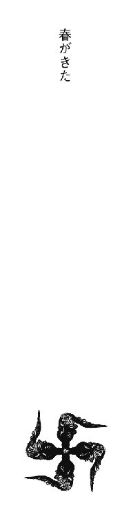
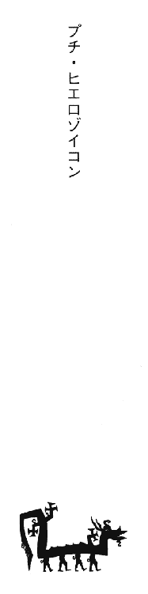
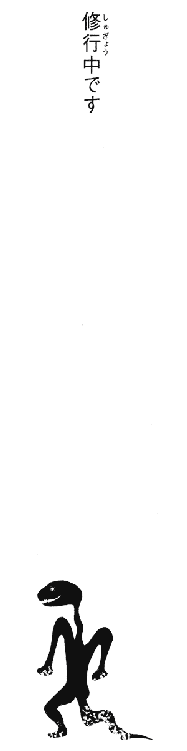
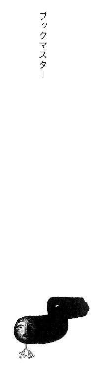

| [香月日輪] 妖怪アパートの幽雅な日常02 | |
| 香月日輪 | |
| (2015) | |
|
妖怪アパートの幽雅な日常②
香月日輪
|
〈帯〉
活字力全開の人気シリーズ
「なんなりとご命令を、ご主人様」
封印の解かれた魔道書から現れる22匹の妖魔たち。
自らの秘めた力に気づいた夕士と親友・長谷。
──────運命の幕あけ！
〈カバー〉
「明日から始めようね」
「は？ なにを？」
「霊力アップのトレーニンクよ。春休みの間は集中特訓ね！」
妖怪アパートの幽雅な日常②
香月日輪
講談社
ＹＡ！ ENTERTAINMENT
妖怪アパートの幽雅な日常②
香月日輪

春がきた
コツコツ、コツコツと、微かな音がして俺は目を覚ました。
六畳の部屋、壁一面の本棚、そして、窓の上部に嵌めこまれたステンドグラスを通った色鮮やかな光が、カーテンを通して布団へ落ちている。
俺は、がばっと跳ね起きた。心臓がドキドキしている。
「そうだ......帰ってきたんだ......！」
なんともいえない気持ちがこみあげてくる。すると、また窓でコツコツと音がした。カーテンを開けてみると、窓辺には三羽のきれいな瑠璃色の小鳥がとまっていた。窓を開けると、小鳥たちは声を揃えて言った。
「おかえりなさい！」
「......ハハ！」
一年前、まさかここがそんな場所だと想像もしてなくて、大家さんの姿を見てひっくり返った翌朝、変な夢を見たと思いこもうとした俺に、この小鳥たちは「おはよう」と声をかけてきたのだ。
そうだった。あれから一年がたったのだ。そして、俺は帰ってきたんだ。この妖怪アパートに！
「ただいま！」
俺は小鳥たちに、そしてこの妖怪アパートに巣食っているすべての物の怪たちに挨拶した。
ただいま！ 帰ってきたかった、ここに。帰ってこられて嬉しいよ。
俺は、稲葉夕士。条東商業高校の二年生になる。
両親を亡くし、親戚の家で中学三年間を過ごし、学生寮のある条東商に合格できて喜んだのもつかの間、その寮が火事で全焼。どうしても親戚の家を出たかった俺は、アパートを探し、なにかに導かれるように、ここ「寿荘」へやってきた。
住宅街の中にあって異様ともいえる洋風建築の、古い古い二階建てアパート寿荘は、その外観からでも充分「妖怪アパート」の称号を得るにふさわしいのだが（実際、近所では「妖怪アパート」の名で通っている。寿荘といっても誰も知らないんじゃないかな？）、実は本当に本物の妖怪の巣だったのだ。
「大家さん」は、黒坊主。大きな黒い卵のような体を白い着物にくるんで、その図体に似つかわしくない小さい小さい手に、でっかい大福帳を持って現れる。
住人の食事の世話を一手に引き受ける賄いは、手首だけの幽霊の「るり子さん」。人間だった頃、小料理屋を持つことが夢だった彼女の作る食事は、もうなんというか絶品という他ない。
ダイナマイトスーパーモデルのような容姿の「まり子さん」は、成仏するのをやめて「妖怪託児所」で保母として働いている幽霊。幽霊や妖怪の子専門の「託児所」があるらしい。妖怪アパートがあるんだから、妖怪託児所があってもいいだろう。なにせ妖怪専門の「神霊科」がある病院だってあるんだからな。まだ聞いたことがないけど、妖怪の子どもたちが通う「妖怪学校」も絶対あるぞ。
妖怪のくせに人間として、大手化粧品会社で経理課長を務めているのは「佐藤さん」。
クリとシロは、幽霊の子どもと犬。実母から虐待を受けて死んだクリは、このアパートで皆に可愛がられながら、成仏するのを待っている。いつもクリにピッタリと寄り添うシロは、クリの「育ての母」。時々やってくるクリのもう一人の育ての母の「茜さん」は、山神に仕える霊獣、二本足で立って歩く狼だ。
これだけ並べてみてもすごいメンツなのに、アパートにはさらに、幽霊だか妖怪だかわからない正体不明の面々がいる。
いつ見ても、どこかを掃除してくれている「鈴木さん」、庭の手入れが趣味の「山田さん」、玄関で送り迎えをしてくれる「華子さん」、居間でいつもマージャンをしている鬼のような奴ら。食堂にじっと座っているだけのじーさん、他にも「這うもの」「漂うもの」「影のようなもの」「光るもの」などなど、実にバラエティーにとんでいる。
では、人間はいないのかというと。いるんだな、これが。しかも、妖怪たちに負けない猛者が揃っているんだ。
まずは、詩人で童話作家の一色黎明。もう十年以上このアパートに住んでいる。子どものラクガキのようにすっとぼけた表情から紡ぎだされる含蓄のある言葉には、時折ハッとさせられる。さすが、難解で高尚な詩と耽美な大人向けの童話をかいて、一部に偏執狂的に熱狂的なファンを持つ異色作家だ。
この詩人の古い知り合い、深瀬明。ポップでパワフルな前衛アーティストであり、一見暴走族かと見まがうバイク乗りで、相棒の狼犬シガーとタンデムで旅する放浪画家であり、個展会場とかでよく暴れるパフォーマーでもある（それを楽しみで見に来るファンもいる）。
地元関西を離れて、女の子の一人暮らしをしている久賀秋音ちゃん。鷹ノ台高校三年生になる。彼女は「除霊師」の卵。生まれもった霊能力を磨くべく、地元の修行道場を経て、鷹ノ台にある月野木病院の「神霊科」で丁稚奉公中。昼は高校で勉強し、夜はこの妖怪病院で働き、ちょっとだけ眠り、人の三倍食うエネルギッシュな女の子である。
謎の霊能力者、龍さん。長身痩躯。長い黒髪を束ね、丈の長い黒のジャケットと黒のパンツに身を包んだ、一見芸能界かファッション界の人間かと思える美男子だ。彼がアパートに現れると、騒がしかった物の怪たちがいっせいに静まり返り、まるでモーゼの十戒みたいにバアーッと道を開けたりするから、これが「高位の霊能力者」というものなのかと感心させられる。でも、詩人曰く「たぶん、人だよ」のとおり、謎が多すぎて果たして本当に人間なのかどうか、怪しいところもある。
怪しいといえば「骨董屋」。灰色の眼に薄い髭、日本語を流暢にあやつる外人（国籍不明）なのだがその実態は、次元を行き来し、古今東西のお宝を売買する怪しい商売人である。いつも背の低い「召し使い」を五、六人引き連れて、どこからともなく現れて、いつの間にかいなくなり、「人魚の涙」だの「ユニコーンの角」だのを売りつけにくる。とても人間には思えないんだが、人間らしいんだな。
どうだ？ なんて「妖怪アパート」の住人にふさわしい面々なんだと思うだろう？
俺はこのモノたちと人たちに、それまでの俺の常識やらなにやら全部をぶっ壊してもらった。両親を亡くして、親戚の家でちぢこまって暮らしてきて、世間の厳しさ、現実の厳しさに片意地はって立ち向かおうとしていた俺の、すっかり狭まった世界の壁を打ち砕き、世界はもっともっと広いんだと、もっと広い目で自分の未来を、可能性をみつめろと教えてくれた。
一度は「普通の人間」として「普通の生活」をしたいとここを出た俺だけど、「普通ってなんだ？」と考えた時、俺はここへ戻らなきゃと思ったんだ。「こちら側」から、人間の世界を見たいと思ったんだ。
去年の九月にここを出て半年。春休みに入るやいなや、俺はすっ飛ぶように帰ってきた。みんなは、まるで俺がそうするのを知っていたかのように歓迎してくれた。
「昨夜のるり子さんの手料理は......最高にうまかったな～」
今日からまた毎日、るり子さんの夢のつまった料理が食べられるんだ。そう思ったとたん、腹が鳴った。
窓からは、妖怪アパートの前庭が見える。満開の桜がきれいだ。この庭の桜は次から次へいろんな種類の桜が咲いては散り、咲いては散り、一月ほども楽しめる。桜の木は一本しかないんだけどな。
アパートの敷地は、特殊な結界の中にあって、いろんな次元とつながりあっているという。地下にある天然洞窟温泉も、別の次元にあるんだそうだ。そうだろうなあ。こんな住宅街のド真ん中に地下の洞窟温泉なんてありえない。
アパートの中も、俺の知らない部屋がまだある。そして、アパートの住人も、まだまだ俺の知らない人やモノがいるらしい。俺は今、そのモノや人と会うのを楽しみにしているんだ。これから先、どんなことが起こるのか楽しみでしょうがないんだ。
「だけどその前に、朝飯だ。とりあえず朝飯！」
今日も、廊下を熱心に磨く鈴木さんがいた。
「はよっス！」
俺が挨拶すると、鈴木さんはおたふくのような目元をさらに下げてペコリとお辞儀する。
洗面所へ行くと、紺のスーツ姿の佐藤さんが身支度を調えているところだった。
「おはよう、夕士くん。春休みだってのに早いねえ」
「うはようっス！ るり子さんの朝飯を抜くわけにはいかねぇっスよ」
「るり子ちゃんなら、いつでもあったかい飯を用意してくれるサ」
大手化粧品メーカー「ソワール化粧品」勤続二十年の中堅課長佐藤さんは、細い目で笑った。佐藤さんは、人間としてあちこちの会社を渡り歩いている。「人間として生きること」が好きなのだ。
食堂には、うまそうな匂いが立ちこめていた。詩人と、丸っこい体の山田さんが、朝飯を食っていた。
「うはよーっス」
「おはよう、夕士くん。久しぶりのアパートでのお目覚めはどう？」
「ゆうべは嬉しくて興奮して、すぐには眠れなかったっス」
「おおげさだなあ」
皆笑った。ふと足元に気配を感じて見れば、クリとシロが並んで俺を見上げていた。俺は、クリを抱き上げた。
「久しぶりだな、クリ。元気だったか？」
幽霊に対して元気もなにもないけど、俺は思わずそう言ってしまった。クリの頭をなでて、短く柔らかい毛の感触を楽しむ。ぷっくりとしたほっぺはピンクで、くっきりとした二重のクリクリの目は（だから詩人がクリと名付けた）、じっと俺を見つめる。クリは口がきけないけど、俺を歓迎してくれているような気がする。その証拠に、俺の顔をしきりに見つめ続けている。
「一緒に朝飯食おうぜ、な」
俺はクリを抱っこして、詩人の隣にすわった。皆がニヤニヤと俺を見るので、ちょっと照れくさい。
さて。半年ぶりのるり子さんの朝飯はというと。
鮎の干物に、出し巻き、若竹のやわらか煮、春キャベツの肉巻きに、白魚の味噌汁。漬物はキャベツのぬか漬け。もちろん飯は、炊き立てのピカピカだ。
「うわあ......なんつーか、春っスねえ！」
「春だよね～。この若竹のやわらかいこと！」
このアパートには、海や山の妖怪たちから、さまざまな旬の食材が届けられる。畑を耕したり、漁をして暮らしている妖怪たちがけっこういるんだそうだ。人間にまじって、市場でセリに参加してたりするかもしれない。
「うまいっス！ るり子さん!!」
筍とキャベツの新鮮さにしびれる。昨夜の白魚の吸い物もうまかったけど、味噌汁もいい！ 春の香りが口いっぱいに広がる。丁寧にダシをとった上品で奥の深い味付けは、るり子さんの真骨頂だ。
手首だけのるり子さんが、厨房の中でもじもじと指をからませた。るり子さんは、自分の作ったものをうまいうまいと言ってもらえるのがなによりの喜びなんだ。その夢を果たせず死んだからだ。
「俺、鮎の干物なんて初めて食ったっスよ。ぜんぜん臭くないスね」
「全部食べちゃわないで半身を残しといて、後でお茶漬けにするといいヨ」
「ああっ、それいいっスね！」
「も～、このキャベツのぬか漬けがサイコーにうまくて」
なにもかもあんまりうまいんで、ついガツガツと夢中になってて、クリのことをすっかり忘れていた。俺は出し巻きを一切れ、クリに食べさせてやった。クリは幽霊だから、食い物を食っても身にならないという。でもやっぱり、うまいものはうまいと感じるらしい。クリは無言で、もっとくれと催促した。
「ただいまぁ───！ おはよ───っ！ お腹すいた───!!」
一晩中妖怪病院で働いて（なにをしているのかは知らないが）、三時間だけ寝て、秋音ちゃんが帰ってきた。それでもメチャクチャ元気だ。
「イヤ──ッ、このキャベツの肉巻き、スッゴイおいしい──!!」
人の三倍食べる秋音ちゃんは、皿ごと食いそうな勢いだ。朝から大盛り飯を三杯平らげる女子高生はこの人ぐらいだろう（しかもその後、デザートにバカでかアンパンを食ったりする）。
「あいかわらず男らしい食欲だな、秋音さん」
「夕士くんこそ、もっと食べなきゃダメよ。ちょっと見ない間に痩せちゃってさ」
「どこの飯も、ここの飯にはかなわないから」
俺は苦笑いした。このアパートを出ていた半年間。いろいろつらいこともあった。でもそのことがあったからこそ、俺はここへ戻ってこられたんだと思う。
「じゃ、おいらそろそろ出勤しま～す」
書類鞄を小脇に、佐藤さんが出てゆく。
「いってらっしゃーい」
俺は鮎茶漬けを、秋音ちゃんは三杯目の大盛り飯をかきこんでいた。詩人は食後のお茶をすすっていた。山田さんはスポーツ新聞を読んでいた。いつもの、変わらない朝だった。それが嬉しかった。
居間の縁側には桜の花びらがたくさん散っていて、そこに座ると桜の香りがした。空気はまだちょっと冷んやりしているけど、陽射しは暖かで、青空をバックに満開の桜がとてもきれいだった。
丸くなったシロの体を枕にして、クリがすやすやと眠っている。マージャンをする鬼たちも昼間はいなくて、居間はなんだかとても静かだった。縁側に寝そべると、顔の上へ桜の花びらが落ちてきた。
「ああ......きれいだなあ」
のんびりとこう思える幸せを噛みしめる。そうしてぼんやりと桜を眺めていると、桜の木から長い黒髪をたらした着物姿の女が、逆さ吊りでずるずると姿を現し、白目をむいてこっちを見た。
「............」
まったく相変わらずな雰囲気を満喫させてくれる。ここには悪いモノはめったに来ないというから、あの女も悪霊とかじゃないんだろうけど。死体のようにダラリとぶら下がるのはやめてほしいもんだ。
ドッドッドッと、バイクのエンジン音がした。画家が旅行から帰ってきたのだ。俺は、玄関へ飛んでいった。
「明さん！」
「おう、夕士！」
「ただい───」
ま、と言う前に、俺は画家の愛犬シガーに押し倒された。狼の血をひくシガーは、立てば身長百六十ぐらい。体重は五十キロもある。シガーはその図体で俺を押さえこみ、でっかい舌で顔じゅうをべろべろになめまわしてくれた。
「わかった！ わかった、シガー！ もういいから!! もういいって!!」
バサバサの茶髪に黒の革のバイクスーツ、胸元に米軍の認識票をジャラジャラさせた、どこからどうみても暴走族みたいな飼い主が、面白そうに笑った。シガーも、ちゃんと俺を覚えていてくれたんだ。
「おかえり、深瀬～」
「おう、黎明。土産だ、ホレ！」
「お、地酒～!?」
「そいつがすげぇうまくてなあ。さっそく一杯やろうぜ。秋音とお前にはこれだ、夕士！」
画家が投げてよこしたのは、一抱えもある包み。
「うおっ！蕎麦だあ!!」
「そいつが、またうまかった！ るり子に料理してもらえ」
「うわ～、楽しみだ～!!」
「あー、明さん。おかえり～」
「秋音さん！ 蕎麦、蕎麦!!」
俺たちがワチャワチャと騒いでいるところへ、そいつはひょっこりと現れた。
「まいど、ど～も～。お久しぶりです～」
ひょろりとした絣の着物姿。腰には紺に白く〓（丸囲い「薬」）と染め抜かれた前掛けをして、こげ茶の風呂敷に包んだ大きな荷物を背負っている。足元は脚半に草履と、えらく昔風の行商人といった出で立ちだ。そして......。
「ああ、薬屋さん。久しぶり～」
薬屋と呼ばれるその男（？）の顔は......、紺色の布でほっかむり（これもまた古風な）したその顔は......。
「へのへのもへじ......??」
俺は固まってしまった。それはまるで、白い紙に描いた「へのへのもへじ」そのものだったんだ。
「ど～も、今回はご無沙汰しちゃって」
「ちょうどよかった。傷薬が切れたとこなんだ～」
「あ、俺も」
「深瀬さんは、傷薬が減るのが早いですね～」
薬屋は縁側へまわると、しょっていた荷物を広げた。それは大きな柳行李だった。
「あ、あたし、龍さんから買ってほしいもの頼まれてるんだ。メモもってくるね」
秋音ちゃんはそう言って、二階へ上がっていった。
「おや、こちらさん、お初ですね」
へのへのもへじの顔が俺のほうを見た。ヤッパリどう見ても、へのへのもへじだ。
「去年、半年ここにいた子でね。昨日また戻ってきたの。稲葉夕士くんだよ」
「それはそれは。ここは居心地がいいですものねぇ～」
「こっちは、薬屋さん。年に一、二回行商しにくるんだ」
「よろしくお願いします～」
「ド、ドモ」
「ここの薬はよく効くよ～。胃腸薬とか傷薬とか買っとけば、夕士くん？」
「いやいや、お褒めにあずかって恐縮です、一色さん」
そのへのへのもへじは、腰の低い、実に丁寧な受け答えをした。商売人としては百点満点かもしれないが、だが......。
「顔がひきつってるぞ、夕士。なにか言いたいことがあるんじゃねぇか？」
と、画家が笑いを噛み殺しながら言った。
「は......。あの......薬屋さん......」
「はい。なんざんしょ？」
「そ、その......顔......は......お、お面......スか？」
一瞬の、妙な「間」があって、薬屋は笑った。
「いや、これはお恥ずかしい。そうなんです。お面なんですよ～」
「あ、やっぱり！ なあんだ、そうっスよね！ お面スよね!!」
俺たちは大笑いした......が。
「なんで、そんな面をかぶってんだよ！」
とは、訊けなかった。
薬屋がほっかむりをとると、確かにへのへのもへじは「お面」だった。つるっぱげの頭に毛が三本。面と同じくらい紙のように白い肌に、妙に細長い首をしている。
「いや～、このお面ももう古いかなあ～。なにか新しいのに変えようかなあ～、やっぱり」
マジに照れたように薬屋はそう言った。ちがう！ 問題はそこじゃないだろ！
「アタシは好きだよ～、それ」
同じように「子どものラクガキのような顔」をした詩人が言った。画家はさっきから、腹を抱えて笑っていた。
薬屋が売っている薬は、町で見かけるようなものではもちろんなく、いかにも手作りといった感じのものばかりだった。要するに「富山の薬売り」なんだな。
「はい、これが『百足油』。傷薬ね。傷に塗ってね～。これは『王獏』。胃腸薬です～。一回三粒。分けて包んであるから白湯で飲んで～」
とりあえず、俺はお薦めの二品を買った。どっちも五百円と格安だった。「百足油」は、平たくて丸い銀の缶に入った黄色っぽい塗り薬で、「王獏」は黒い小さい粒で、三粒ずつ白い半透明の紙に包まれていた。詩人が俺に言った。
「これこれ。この〝パラフィン紙〟がいいんだよね～。市販の薬とか病院の薬とかじゃ、もうあんまり見かけないよね～、パラフィン紙。これを破る時の感触がいいんだよ～」
「はあ、そういうもんスか」
効きそうといえば、こういう漢方薬っぽい薬のほうが効きそうな感じはする。柳行李の中の薬は、どれも見たこともないようなものばかりだった。瓶入りの根っこのようなものとか、なにかが入った変な色の液体とか、なにせパッケージというものがないんだから、どれがなにやらさっぱりわからない。すべてが怪しい！
「これはね～『熊殺し』。精力剤です～」
「薬の名前とは思えないっスね」
「薬の材料も揃ってますよ。これは、セミの抜け殻～」
「な、なんの薬になるんスか？」
「中耳炎です。これを粉に挽いて、塗り薬と混ぜて使います～」
「へぇ～！」
感心する俺の横で、詩人が笑って言った。
「マギア・ナトゥラリア......だね～。すべて自然のものを使った〝自然魔術〟。昔の医学は、まさにこれだったよね～」
詩人の言葉は、いつも感慨深い。薬屋が売り歩く薬も、すべて自然のものから作られたものらしい。昔は、すべての人間たちがこういう薬で病気やケガを治していたんだ。
「やっぱり、商売相手は妖怪ばっかりなんスか？」
と、訊いてみた。薬屋のへのへのもへじのお面がうなずいた。微妙に面に表情があるように見えるのは気のせいだろうか？
「妖怪だって病気やケガをしますが、化学物質の薬には拒絶反応を起こす者もいます。でも、人からのご希望も増えてます。ここ十年ぐらい」
化学物質には、人間の中にだって拒絶反応を起こす人がいる。アレルギーは、今や社会問題だ。こんなこと昔はなかったのにな。
「メモがあった。これこれ、え～とね......」
秋音ちゃんが、龍さんに頼まれたというリストを持って降りてきた。高位の霊能力者は、なにを買い物するのだろうか？
「ヤモリの黒焼き、蛙の目玉、イモリの心臓と蝙蝠の羽、毒蛇の肝......」
「はいはい、ございますとも～」
柳行李から次々と出てくるゲテモノの数々。
「......龍さん、黒魔術でもするんスかね？」
「霊能者のやることなんて、わかんな～い」
詩人はあっけらかんと笑った。
「あ、俺さっそく『百足油』を使おう。さかむけができちゃって」
と言う俺に、薬屋が言った。
「あ、バンソウコーありますよ～。防水加工、呼吸するタイプ～」
「最新式!?」
それは、まさに市販の絆創膏だった。
「なんだ、こんなのもあるんじゃん！」
「ありますよ～、だって最近の医療品って便利になってるから～。ほらほら、サポート包帯。留め金でとめなくてもいいやつ～。これは本当に便利ですね～」
「うん。うちの病院でも使ってる。ホント、ピタッてとまるのよね～。すごく助かるわ」
薬屋と秋音ちゃんはうなずきあった。
俺は認識を改めた。妖怪の世界だって進化してるんだ。すべてが、虫から作った塗り薬に葉っぱをあてがって、蔓草で巻いてるわけじゃないんだ。
シロを枕に眠っていたクリが目を覚ました。
「ああ、クリた～ん。起っきちまちたか～。ほぉ～ら、新しいおやちゅでちゅよ～」
と言うと、薬屋は、丸くてルビーのようにきれいな赤い棒飴と、それまでクリが持っていた渦巻きキャンディを交換した。クリはさっそく、新しい飴をなめはじめた。シロも横からペロペロなめた。
「これは、いわば霊体の栄養補助食品です。霊体の霊位の安定をサポートします」
「へえ～！ そんなものがあるのか！」
半年ぶりに帰ってきて、俺の目玉からはさっそく鱗がボロボロ落ちてゆく。
人生は長く、世界は果てしなく広い。肩の力を抜いてゆこう。
龍さんの言葉が頭をよぎる。
「次はどこへ行くの、薬屋さん？」
「次は、イラズ神社の裏明神様へ。ネコマタのおばば様のお家へ参ります～」
薬屋は、荷物をどっこらしょと担いだ。
「ネコマタ......って、猫の妖怪？」
「おばば様は、もう千年のご長寿で」
「千年!!」
イラズ神社といえば、ここからは目と鼻の先。そんな場所に千年も生きている化け猫がいるとは......。世界は広すぎて、肩の力を抜いていても驚いてばかりで疲れるぜ。
「おばば様は、この『熊殺し』がご贔屓で。これがお元気の元なんて光栄です～」
「精力剤を飲むババアなんてゾッとしねぇな～」
画家が大笑いした。
「失礼よ、明さん。相手は神様よ」
「神様なのに、精力剤が効くのか？」
と、俺は秋音ちゃんに尋ねた。
「おばば様は猫の変化体だから、ちゃんと肉体があるのよ」
「ああ......ふ～ん」
わかったような、わからないような。
「それでは、これで失礼いたします。またどうぞご贔屓に～」
薬屋は、ぺこぺこと腰低く去って行った。
帰る早々いきなりやってくれるぜ、妖怪アパートは。さすがだ。
今夜は、あのへのへのもへじな顔を夢に見るぞ。絶対見るぞ。
「さあ、酒の用意だ、酒の用意だ！」
「桜は満開だし～。花見酒と参りましょう～！」
大人二人が嬉しそうにバタバタしだした。俺と秋音ちゃんは、顔を見合わせて笑った。花見酒を楽しめない子ども二人は、部屋で昼飯を待つとするか。
二階へあがったところで、急に空気がざわめいた。なんだろうと立ち止まると、俺の耳のすぐ側を、不気味な声が通り過ぎていった。
「大家だ......」
「大家がきた......」
「大家さんが？」
「大家がきたぞ......」
「あ......部屋代の取り立てか！」
大家さんは居間へ現れたらしく、詩人と画家とのやり取りがきこえた。
「旅行から帰ってきたばっかなんだ。万札の持ち合わせなんざねぇよ」
「アタシもぉ～。来週まで待ってぇ～♪」
とても妖怪相手にしゃべっているとは思えんな。妖怪相手に、二万五千円を出し渋るか。
「とはいえ、俺も今日が支払い日だってこと忘れてたな......」
持ち合わせはあるとはいえ、今日払ってしまったら明日の金がない。せっかく長谷と遊びに行くのに。明日は日曜日だから、ＡＴＭの引き出しに手数料がかかっちまうんだな。それは嫌だ！
「大家さんには、またご足労願って......と」
俺は、そっと部屋へ戻ってドアの鍵をしめた。
のそり、のそりと、大家さんが近づいてくるのがわかる。コンコンと、ドアがノックされたが、俺は拝みながら無視した。
「............」
しばらく間があった。あきらめてくれたかな？ と思った時、むにむにむに......という変な音がした。
「なんの音だ？」
俺はキョロキョロした。続いて、ドアが小刻みに震え始めた。
ハッとしてドアの下を見ると、ドアと床の、わずか五ミリの隙間から、大家さんが入ってこようとしていたのだ。俺は飛び上がった。
「わ───っ!! すいません、すいません！払います！ 払いますから、そんなとっから入ってこないでくれ───っ!!」
真っ黒い餅のようにずるずるになった大家さんを思わず想像して鳥肌を立てている俺は、正座させられ大家さんに、しょーもないことをするなと叱られた。
「バカねえ。居留守なんか使うからよ」
食堂で、俺は秋音ちゃんにも叱られた。
「反省してます」
詩人や画家クラスには、まだまだなれそうにない。
その不良店子二人は、さっきから居間で花見酒に興じている。そして、俺たち子どもの前にもご馳走は用意された。画家の土産の蕎麦を、るり子さんは二種類のメニューにアレンジ。エビのすり身入りあんかけだし蕎麦と、イカと春野菜の天ぷら蕎麦だ。どちらも小ぶりの碗に入れられ、おかわり自由。その横に、なんとも可愛らしい手鞠寿司が添えられている。手鞠寿司は、鯛、サーモン、そしてサッパリ大根の漬物の三種だった。
「きれい～～～っ！ 可愛い～～～っ！」
「うまい～～～っ!!」
俺と秋音ちゃんは、まるで「わんこ蕎麦食い大会」の選手のようだった（特に秋音ちゃんは）。詩人と画家も、俺たちに食い尽くされる前にと、酒を中断して蕎麦を食べ出した。
「も～、この蕎麦にまんべんなくからみつくあんの具合が最高だね～」
「天ぷらもうまいっス！ パリパリのサクサクっス！」
俺たちが、るり子さんの腕に惚れ惚れしていた時だった。食堂の入り口で、ドン！ と重い音がした。
見ると、そこには茶髪を肩までたらし、丸メガネをかけた男が立っていた。よれよれのデニムの上下、茶色のベルトに銀のバックル、青い石のネックレスにブレスレット。無精ひげをチョロリと生やした口元に、チビた煙草をくわえているその姿は、一昔前のプータローか、今風に言うとストリートアーティストってところか。夜の繁華街の道端で、絵やアクセサリーを売っていそうな雰囲気だ。そいつは、プルプルと震えていた。
「あ──っ！ 古本屋さんだ───!!」
秋音ちゃんが叫んだ。
「おお、生きてたか、お前!!」
「一年ぶり？ もっと？ 久しぶりだね～！」
どうやらここの住人の一人らしい。旅行でもしていたんだろうか。ドンという重い音の正体は、年季の入ったトランクだった。
「古本屋」は、天を仰いで叫んだ。
「ダシの匂いだぁああ───っっ!!」
続いて俺たちのテーブルに突進してくると、並べられた料理を見てまた叫んだ。
「蕎麦だ～～～!!寿司だ～～～!! わ～しょ～く～だ～～～!!」
古本屋はそう叫ぶと、その場にへなへなと座りこんでしまった。
がつがつとすごい勢いで、蕎麦やら寿司やらをかきこむ古本屋のもとへ、るり子さんがブリ大根をもってきた。古本屋はその手をとると、熱烈にキスを浴びせた。
「最高だよ、るり子ちゃん！ 最高!! 君は本当に最高の料理人だ！ この一年半、どれだけ君の料理が恋しかったことか！ 飯もある？ 米の飯！ 米の飯もちょーだい！ それと漬物!!」
るり子さんは、嬉しそうに指をからませた。
「あんまり一度にかきこむと、お腹をこわすわよ、古本屋さん」
と、秋音ちゃんは言ったが、古本屋はキッと目をむいた。
「こわしてもいい！ 俺はとにかく、今はこのうまい飯で胃をパンパンにしたいんだ!!」
「お前、どこにいたんだよ？」
画家がついだ酒をぐ───っと飲み干し、古本屋は心底うまそうな顔をした。
「ずっとアフリカから中東を旅してたんだ。それも田舎ばっかり！ 日本食はもちろん、うまいと思えるものが、なん～っにもなくて！ ああ──っ、酒がうまいよお～～～っ」
るり子さんが、ほかほかの飯とキャベツとキュウリのぬか漬け、そしてブリのアラ煮を持って来た。古本屋は、アラの骨までしゃぶった。
「......るり子さん、ご飯まだある？」
と言ったのは、秋音ちゃん。古本屋があんまりうまそうに食うもんだからつられたらしい。まだ食うのか！
「古本屋というからには、古本で商売してるんスか？」
俺の問いに、古本屋は飯を口いっぱいほおばってコクコクうなずいた。
「今回は、なんの本を探してたんだい？」
詩人が尋ねた。古本屋は、口の中のものを漫画のようにゴックンと飲みこんでから言った。
「原始キリスト教とアフリカの土着信仰が混じった呪術本で『黒いマリア』という黒書があるらしいと聞いたんで、あのあたり一帯を聞きこみしてたんだけどね。『黒いマリア』はなかったよ。他の本はいろいろ面白そうなものが手に入ったけどね。『死海文書』とか『探求の書』とか『多元記述法』とか」
聞き覚えのあるタイトルに、俺は驚いた。
「そ、それって超有名な魔術の本だけど、あるかないか不明で......」
古本屋は、丸メガネの下からニヤリと笑った。
「あるんだ。『ネクロノミコン』も実在する。表のルートじゃ絶対手に入らないけどネ♪」
『死霊秘法』だと!? あ、怪しい～!! こいつも「骨董屋」と同じ口なのか!? 見た目は三十歳ぐらいの男に見えるけど、本当は人間かどうかにも、大きな疑問符がつく奴なのか!?
古本屋は宣言どおり、るり子さんの飯で腹をパンパンにして、やっと一息ついたようだ。
「あ～～～......日本茶が、これまたうまい......！」
そしておもむろに、俺を見て言った。
「お前、誰？」
遅ぇよ!!
「新入りの、稲葉夕士くんだよ。条東商の二年生。夕士くん、本が好きなんだよ～。話が合うかもネ」
合うのか？ あまりそう思えないし、思いたくもないが。
「古本屋はね～、本好きが高じてこうなっちゃったんだよね～」
「いや～、ハハハハ！ お恥ずかしい～」
古本屋は頭をかいた。詩人の言う、こうとはどうなのか訊くのが怖い。だから訊かないでおこう。
桜の散る居間の縁側に、古本屋は座布団を枕に寝そべった。
「はぁあぁあ～～～......幸せだぁ。日本人で良かった～」
ああ、日本人だったんだ。出で立ちも言動も無国籍だからわからなかったぜ。元はどういう奴なのかな？
しかし、幻の希書、珍本を追って世界中を旅するなんて、ちょっとロマンだよな。俺にはできそうにもないが。
詩人が、古本屋のトランクを指差して言った。
「なにか面白そうなの、ある？」
古本屋はトランクを開けた。中には本がギッシリつまってた。道理で重い音がするはずだ。画家も秋音ちゃんも、どれどれと集まってきた。
さまざまな文字の刻まれた表紙。いかにも古そうな年季の入った革張りのものから、ペーパーバックまで多種多様に揃っている。古本屋は、このトランク一個で商売しているという。しかし、いくら詰めこんでもトランクに入る本の数なんてたかが知れていると思うが......なにか仕掛けがあるんだろうか？
「『ボイニッチ写本』。希書中の希書。一九一二年に、古本屋のボイニッチがある寺院でみつけた手稿を写したもので、十三世紀の哲学者ロジャー・ベーコンが書いたものだと言われてるんだけど、十五世紀に初めて西洋に伝えられたはずのヒマワリの絵が描かれてるし、当時では考えられていなかった〝精子と卵子の受精〟の図や、アンドロメダ大星雲の図なんかが記されているんだ」
「その、ロジャー・ベーコンって人は、どうやってヒマワリやアンドロメダのことを知ったんスか？」
「それが謎だから、希書なんだよ」
古本屋は楽しそうに笑った。
「おお！ 『毛皮のヴィナス』の原書じゃ～ん」
「お！ 『ソドム百二十日』！」
勝手にトランクを漁っていた詩人と画家は、お目当てのものを探り当てたようだ。
「ちょっと二人とも～、貸すだけだよ～。買わないんなら、ちゃんと返してくれよ～」
本の山を眺めていた秋音ちゃんが、顔をしかめた。
「なんか変な感じがする。変なのが交じってるわね、いつものことだけど」
「変なって？」
「本って、念がこもりやすいのよ。意味をもった言葉の集まりだから。魔術書なんか特にね。古本はさらに念がこもってる場合が多いわ。実際に使われていたものだからでしょうね」
そう言いながら、本の上で探るように手をかざしていた秋音ちゃんが、中からするりと一冊の本をつまみあげた。
「これはなに？」
大きさは国語辞典ぐらい。赤黒い革の装丁で、ごく薄い本だった。一ページに一枚ずつ絵が描かれていて、絵の上にはローマ数字で１から21までの番号が打たれている。そして一番後ろに０のついた絵があった。
「タロットカード？」
その二十二枚の絵は、西洋占いでよく使われるタロットカードを描いたものだった。１が魔術師、13が死神、15が悪魔、19が太陽とかいうやつだ。
タロットは古くからヨーロッパで使われている占いのカードで、本当は全部で七十八枚ある。五十六枚の「小アルカナ」と、二十二枚の「大アルカナ」に分かれていて、小アルカナがトランプの原型であるといわれている。この本の中の絵は「大アルカナ」と呼ばれるほうだ。タロットの絵の中には美術的に価値の高いものもあるそうだから、これは「画集」じゃないかな？
「名前が変だわ」
「変って？」
「タロットなら、例えば『Ⅰ』は『魔術師』でしょう？ 絵は確かに魔術師の絵だけど、カードの名前がそう読めないの」
確かに、見たこともない文字が書かれている。古本屋は頭をかいた。
「それねぇ～、どこかの古本市でおまけに付けてくれたやつなんだよ。俺も画集だと思ってたよ？ ヤバイ感じはしなかったからな～」
秋音ちゃんはうなずきながら、慎重に本をスキャンしているようだった。皆が注目する。
やがて、顔を上げた秋音ちゃんはこう言った。
「古本屋さん、この本、たぶん〝封印〟されてる」
「へえ......！」
「封印って??」
「なにか力を持っているのよ、この本は。でもその力をふるえないようセーブされているの。絵の名前が読めないのはそのせいだわ」
「魔法の本！ 本物の......」
俺にはただの画集にしか見えないが、それでもちょっと感動的だった。
「いや──っ！ これだから古本屋はやめられない!!」
古本屋は、ピシャリと膝を打った。詩人も画家も笑っていた。
「これも一つの掘り出し物ってやつ」
「これ、どうするんスか？」
秋音ちゃんの手から本をとって、古本屋はニヤリと笑った。
「このテの本は扱いは難しいけど、コレクターにはものすごい値で売れる♪」
「も、ものすごい値スか？」
「ものすごい値だ」
それから古本屋は、秋音ちゃんに投げキッスした。
「サンキュー、秋音ちゃん！ 君のセンサーに感謝だ！」
しかし、秋音ちゃんはその本をパッと取り上げて言った。
「感謝されるのはまだ早いわ、古本屋さん。本当に売っていいのか、藤之先生にみてもらってからね♪」
ニッコリとそう言うと、秋音ちゃんはバイトに行く準備をするため居間を出て行った。魔法の本を小脇にはさんで。
「あ～......」
古本屋は、苦笑いしながらその後ろ姿を見送った。俺たちは大笑いした。
藤之先生というのは、秋音ちゃんが今師事している霊能力のお師匠さんで、月野木病院の「妖怪担当医師」である。
るり子さんが、手作りよもぎ餅を出してくれた。よもぎの、なんともあざやかな春色と春の香りがたまらない。餡の甘さも上品だ。香ばしい蕎麦茶と一緒に食べると、何個でもいけそうな気がする。
和菓子をお供に、古本屋の旅話や、本にまつわるおもしろ話などをきいた。
「イギリスじゃ、日本じゃ考えられないくらい超心理学の分野が認められていて、実際に『魔術師』という職業が認知されている上に、ちゃんと〝地位〟があったりする。だから、かえって魔道書なんかは出版されにくいんだ。出版社が嫌がるんだな。魔道書の持つ意味や力を信じてるからだ。だから、日本へ持ちこまれたりするんだ」
「へえ......！」
「アレイスター・クロウリーっていう実在の魔道士がいて、こいつが書いた魔道書が日本で出版されたことがあるんだ。ちょっとした騒動になったらしいよ。小さなアクシデントが頻発したり、霊能者から次々と『あれは悪い本だから出さないほうがいい』って忠告が入ったり」
「出版されたんスか？」
「された。こいつがそうさ」
「そ、そんなの持ってて大丈夫なんスか？」
「本当に力を持ってて、イタズラをするのは原書だよ。こいつは大丈夫。念をこめない限りな」
と言って、古本屋はウインクした。あんたは念をこめてないだろうな？
件の魔道書は、数式がズラズラ並んだまるで数学の本だった。
「な、なにがなにやらわかんねぇスけど？」
「そりゃ、専門書だからな」
古本屋は笑った。そうか、これも一種の「専門書」か。素人が物理学書を読んだってわからないもんな。それと同じことなんだな。
「お前、クトゥルー神話って知ってる？」
「ああ。ラヴクラフトの恐怖小説を体系化したやつっしょ？ 確か、いろんな人がいろんなエピソードを書いてたスよね」
「そう。クトゥルー神話には、いろんな化け物が出てくる。その本は、その実在を証明したもので、化け物たちの召喚法が記されてるんだ」
「......ほんとなんスかぁ？」
苦笑いする俺に、古本屋は肩をすくめて笑った。煙草をうまそうにふかす。
「クトゥルーの実在云々という話は別にしても、この原書が相当な力を持っていたのは事実さ。封印するのに、えらく苦労したらしいぜ？ 本ってのは、書き手の持つ力以上の力を内包するもんだ。なあ、黎明さん？」
蕎麦茶をうまそうにすする、子どものラクガキのようにとぼけた顔をした詩人は、そのとぼけた顔をさらにすっとぼけさせて笑う。詩人は、こんなラクガキのような顔をして、凄まじいエログロを結晶のような美しい文章に綴り上げるんだ。その煌くような闇にドップリ浸かりきって抜けられず、社会人としてまともに暮らしていけなくなった奴が何人もいるらしい。
「そーねぇ。形をとって現れたものだからねぇ。頭の中の考えが文字になった瞬間に、別物になった感じがする時はあるよねえ」
不思議な話だ。形になった瞬間、それは作者から離れて別物になってしまう。作者は、それを止められない。詩人のようなベテランでもそうなのか。いや、ベテランだからこそなのか。
「活字ってなあ曲者だよな。映像や造形よりもな」
寝転んで酒をチビチビやりながら画家が言った。
「例えば『ミロのヴィーナス』に両腕があったなら、あれほど絶賛はされていないだろう、という説がある。ミロのヴィーナスがあんなに人を惹きつけるのは〝果たして元はどんな姿だったのだろうか？〟という想像をかきたてるからだ。活字は、この想像する楽しみが一番多い分野だろ」
確かにそうだ。親戚の家でちぢこまるように暮らしていた頃、俺の唯一の楽しみは読書だった。活字の世界で遊ぶことが、なにより楽しかった。そこでは、俺はなんにだってなれた。冒険者、戦士、殺人鬼を追う探偵。いろんな世界へも行けた。そうだ。俺は、本に書かれていること以上に想像して楽しんでいた。
この「魔道書」に書かれている「魔物の召喚法」を見て、本当に魔物を召喚できるんだと思いこむことができる奴は、たぶん大勢いる。そしてそのなかには、本当に魔物を召喚してしまう奴だっているかもしれない。
「それが、書物の持つ怖ささ。人間の持つ潜在能力を増幅する触媒になってしまうんだ」
わかる気がした。まあ、俺には関係ないけど。魔道書なんて、これからも読もうとは思わないだろうからな。
「......でさ、あんまりスムーズに話がつくなと思ったらさ、そいつ男だったんだよ！」
「ええ？ でも、女だったんっしょ？」
「女だったよ！ すんげぇ美人でスタイル抜群！鎖骨クッキリ、胸なんてこぉ～んなにでっかくて、足がスッラ──としててさあ！」
「でも脱いだら余計なモンがあったわけだ」
詩人と画家が大笑いした。
「あったなんてもんじゃない！ デケーんだよ!!」
「ギャハハハハ!!」
「しかも、そいつはタチだったんだ!! サイアクだろ!!」
「ヒ──ッ、こえぇ──っ!!」
「それで？ バック捧げたの？」
「捧げるかい!! 窓ブチ破って逃げたよ！ 荷物抱えてパンツ一丁で、ブロードウェイを走ったさあ!!」
「ギャハハハハ!!」
全員、腹を抱えてのたうちまわった。夕飯時まで、そんなバカ話で盛り上がっていた。
その日の夕食。古本屋の帰宅を歓迎して、るり子さんは純和食の腕をふるった。
桜鯛の刺身に塩焼き、トコブシの醤油焼き、蕪の琥珀蒸し、わかさぎの唐揚げ、よもぎしんじょ、ぜんまいと蕗の煮物、生湯葉と菜の花の炊き合わせと、食卓はまさに春爛漫だった。おまけに鳥釜飯とサケ茶漬けとくれば、古本屋はもう大感激だ。
「春には春の、この季節感！ 見た目、香り、味の、この繊細さ！ ああ、日本人に生まれてきて良かったよ！」
桜鯛の刺身は、細かく砕いた氷の上に桜の葉をしき、その上にイカとホタテの刺身とともに盛り付けられ、桜の花が添えられている。蕪の琥珀蒸しの上には、タンポポの花びらが散らされ、その黄色がとても映えた。よもぎしんじょの春緑には金箔がのせられている。なんてすみずみまで行き届いているんだろう。和食の真髄を見るようだ。
佐藤さんや山田さんやまり子さんらも、古本屋の帰宅を喜び、皆で日本酒で乾杯した。今夜の食堂は、なんともにぎやかだった。
夜も更け、妖怪アパートには昼間はなかったいろんな気配が満ちる。そこここの暗がりでかさこそとなにかの気配がする。空中を漂うモノが増える。居間の衝立の向こうではマージャンが始まる。廊下を薄い影たちが行き来する。
ああ、そう。この感じだ。これすら懐かしい。こんなわけのわからんモノたちすら、俺は恋しかったんだ。
「そうか。お前も半年ぶりなんだな」
地下の温泉に向かいながら、同じように懐かしげな表情で古本屋が言った。俺は頭をかいた。
「なんで帰ってきたんだ？」
「............さ......寂しかったから」
自分で言って、俺は真っ赤になった。なんてバカ正直に答えているんだ、まったく！ でも古本屋は笑わなかった。
「楽しいもんな、ここ」
その言葉に、俺は素直にうなずいた。きっと皆そう思ってる。ここに住みついた人間は、皆。
「お！ それ、龍さんの髪の毛入りペンダントだろ。骨董屋に売りつけられたか!?」
脱衣場で服を脱いだ時、俺の首にかかったペンダントを見て古本屋は笑った。霊毛であるという龍さんの髪の毛を一本、台座と水晶の間にはさんだペンダントは、骨董屋が勝手につくって（つまり龍さんに無許可で）、勝手に売りさばいているものだ。
「これ、このアパートを出る時に、骨董屋さんに餞別でもらったんス。今度会ったら返せって言われるかもな～」
「ハハハ！ 龍さんや骨董屋にも早く会いたいな」
洞窟風呂に全身を浸して、俺たちは大声を上げる。
「あ～～～っ、極楽だ──!!」
飯がうまくて、楽しい仲間がいて、部屋は南向き、地下には温泉。これが極楽でなくてなんだろう。俺たちは極楽へ帰ってこられたことをしみじみと喜んだ。そこへ───。
「ヤッホー！」
と、軽～く現れたのは、クリを抱っこした全裸のまり子さんだった。俺たちは湯船から飛び上がった。
「どわあああ───っ!!」
「まり子ちゃん！ 男湯に入ってくんのやめてよ!!」
「だって、こっちのほうが広いんだも～ん。ね～、クリたん」
まり子さんは幽霊になってからもう長いので、女の恥じらいなどとっくにないのだ。しかし、現役の俺たちはそうはいかない。いくら極楽でも、このサービスはちょっと刺激過剰だ。慌てて逃げ出す。
「もーっ、まり子ちゃんってば相変わらずなんだからな～！」
「いくら幽霊っていっても、あんだけハッキリクッキリしてたらマズイっすよね、やっぱ」
しかし、古本屋は首を振った。
「いや～、龍さんなんか、ぜんっぜん平気だよ。霊能者だからこそ割り切れるんだろうけど、こう肩をすくめながら『だって生身じゃないんだし』だってさ」
「すげえ！」
それを修行の賜物というのだろうか。単なる慣れなんだろうか。いずれにせよ、すげえ神経だ。
「じゃ、おやすみ～！」
古本屋と別れて、俺は自分の部屋へ戻った。
布団に寝転がると、疲れがドッと押し寄せてきた。今日は、すごく長い一日だったな。嬉しすぎて興奮してた昨日は疲れも感じなかったけど。でもいい気分だ。新しい仲間にも会えた。
明日は、長谷のバイクにタンデムしてツーリングだ。俺がアパートに戻ったことを、きっと喜んでくれる。
いつか、長谷をここへ招待したい。あいつはどう思うだろう？ もちろんびっくりするだろうが、それから......？ そんなことを思いつつ、俺は眠ってしまった。

プチ・ヒエロゾイコン
どれぐらい眠っていただろうか。
「こんばんは」
と、声をかけられた。
「ん？」
俺は、起きていた。布団の上に座っている。
「あれ？」
部屋の中も外も真っ暗だ。カーテンの向こうをゆらゆらと発光体が移動してゆく。
「こんばんは」
もう一度声をかけられ振り向くと、布団の上に本が一冊置かれていて、その上に身長十五センチほどの小人がいた。暗闇の中でぼんやりと光っている。ベレー帽のようなものをかぶり、タイツのようなものをはいたその姿は、中世のおとぎ話の中に出てくる道化師のようだった。
「なんか用か？ 俺、明日は出かけんだよ。寝かせろよ」
俺は、そいつもこのアパートに出入りする物の怪の一種と思ったんだ。小さなモノが声をかけてくることはめったにないが、花の精や虫の精みたいなモノも、ここじゃよく見かけるからだ。
「いえいえ。私めの呼びかけに応えて下すっているのは、あなたのほうで」
小人はそう言うと、丁寧にお辞儀をした。
「お初におめもじいたします。私め、フールと申します。以後おみしりおきを」
「はあ」
「このたび、長い長い旅路の果てに、ようやく主と巡りあえて、我ら一同心より喜んでおります旨どうかお察ししていただきたく......ああっ、寝ないで！ ご主人様!!」
「ペラペラのべくってんじゃねーよ、俺は眠ィんだ」
「やっとあなたのチャンネルが開いたのが、この時間なのです。どうかお話をお聞きくださいますよう、ご主人様」
「ご主人様って......誰が？」
「あなたです、夕士様」
そう言って、その小人フールは、また丁寧にお辞儀をした。
「..................そうか。これは夢だな。ということは、俺は実際は眠ってるわけだ。よし、いいぜ。話とやらを聞こうじゃねぇの」
「ありがとうございます」
「なんで俺がご主人様なわけだ？」
俺は笑った。フールは、ぴょんと本から飛びのいた。
「これをご覧あれ」
本がパタリと開くと、ヒラヒラとページがめくれてゆく。そこにはタロットカードの絵が描かれていた。
「あ、これ昼間の......。古本屋が持ってたタロットの画集じゃねえか」
「左様。そして、これが私めでございまする」
フールは、最後のページを指差した。そこには「０」の「愚者」が描かれていた。
「はは、そうだな。フールって書いてある。ん？ なんだ、カードの名前読めるじゃん」
その瞬間、パシッ！ という鋭い音とともに、本がパアッと光った。
「うおっ、びっくりした！ なんだ？」
フールは嬉しそうに笑うと、また一段と丁寧にお辞儀をした。
「おめでとうございます。ただ今、本にかけられた封印が無事解けましてございます。これで、あなたは間違いなく我らのご主人様と認められた次第で......」
「封印が......解けた？」
フールは、布団の上でまるで劇を演じているかのように大仰に言った。
「この世に、『ヒエロゾイコン』なる大魔道書がございます。さる大魔道士が、異次元より召喚した七十八匹の妖魔どもを封じこめた本であり、魔道士は意のままに本の中より妖魔を呼び出し、使役するのでございます」
「へえ～、すげぇな！」
ここでフールは、コホンと一つ咳払いし、本を指差すとちょっともったいぶって言った。
「本書は、『小ヒエロゾイコン』と呼ばれます」
「えっ!? ......ということは、この本にも妖魔が封じられてるってか？」
俺は身を乗り出した。フールはうんうんとうなずいた。
「左様、左様。本書は、さる魔道士が『ヒエロゾイコン』に倣い、異次元より呼び出したる二十二匹の妖魔どもを封じこめた、れっきとした魔道書なのでございます」
「へえ──っ！」
俺は素直に感心した。なるほど、元祖「ヒエロゾイコン」の妖魔が七十八匹だから、それをタロットの「アルカナ」に見立てて、こちらは「大アルカナ」になぞらえて二十二匹にしたわけだ。こいつは一種のパロディだな。
「本書の創造主は、もはやこの世にはおりません。創造主亡き後、我らは長い長い旅に出ます。というのも、創造主は我らにふさわしい次の主が現れるまで、本書を封印したからでございます。我らは人の手から手へと渡り続けました。ただの画集として」
「ふんふん」
「しかし我々とて、ただ流浪に流浪を重ねていたわけではありません。この世のどこかにいらっしゃる主の元を目指していたのでございます。そして、やっとたどり着いた」
「ふんふん」
「そのお方は、主以外は決して読めぬ我らの名前を、見事お読みになりました。よってここに、小ヒエロゾイコンの封印は解かれたのでございます。新たなる主の元で、また我らに命が吹きこまれました！」
「ふんふん......ん？」
フールは、さらに一段と丁寧なお辞儀をした。
「我らが新たなるご主人様は、あなた。稲葉夕士様。どうぞ、なんなりとご命令を」
ここで、俺はやっと事態が呑みこめた。
「お前らが捜していた新しい主人って、俺だったのか？」
「左様で」
「でも俺、別に魔道士でもなんでもないぜ？」
「主たる資格は、実践的な技術や経験よりも、潜在的な素質と感応力でございます」
「俺に素質があるってか？ マジで？」
「でなければ、封印は解かれません」
俺とフールは、しばし見つめあった。フールはにこにこと笑っていた。
俺は、ちょっと混乱した。確かに、以前このアパートにいた頃「霊能力の素質があるかも」と言われたことがある。そう言ったのは、秋音ちゃんだ。そう言われて、俺は大いに戸惑った。霊能力なんて欲しいと思ったことなんかないし、これからも欲しいとは思わないだろう。だって、そんなものは俺の生活に役立たないものだし、それどころか、霊能力なんて素人にとっては邪魔なだけの力だろう？幽霊が見えたからって、感じたからって、それをどうすればいいんだ？
まして、二十二匹の妖魔が、いくら俺の命令をきくっていったって、妖魔を使って俺になにをしろと............俺は、頭をぶんぶんと振った。アホか、俺は。これは夢なんだから、今ここでそんなことを真剣に考える必要なんてないじゃないか。
「なかなか面白い話だな、フール。俺にそんな力があったなんて驚きだぜ。要するにお前たちはアレだな。龍さんたちが使う〝式鬼〟ってやつだ」
「大きな意味では、左様で。使い魔の部類に入りますな」
俺は、小ヒエロゾイコンを手にとった。パラパラとページをめくってみる。確かにどのカードの名前も読める。俺は、ちょっとゾクゾクした。
「そいじゃ、ちょっくら試してみよ～かな～。あ、そういや、フール。お前は......えーっと」
「私めは、本書の案内人にして、妖魔とご主人様の仲介役でございます」
フールはおおげさにお辞儀をした。
「なるほど。わからないことはお前に訊きゃあいいんだな。ＯＫ。じゃ、まずは......『Ⅰ』から見てみるか。『魔術師』の......ジン！」
魔術師のページがカッと光り、そこから白い煙がもくもくと立つと、その中から筋骨たくましいハゲ頭のおっさんが現れた。その服装は、まるで『アラジンと魔法のランプ』に出てくる魔人のようだった。
「ジン。万能の精霊。いわゆる〝アラジンのランプの精〟でございます」と、フールが解説した。
「マジ!? すげえじゃん!!」
俺は、これが夢であることも忘れて大興奮した。
「なんなりとご命令を。ご主人様」
本から湧き立つ煙の中で、ジンが頭を下げた。
突然魔法の精が目の前に現れて、望みを言えと言われたらどうする？ 魔法の精が実在することすら驚きなのに、いきなり「望み」なんて思いつかない。いや、別にここで言わなきゃならないことはないんだが、俺は思わず、ごくごく一般小市民的なことを叫んでしまった。
「か......金！ 日本で使える現金!!」
我ながらあさましいとは思ったが、口から出てしまったものはしょうがない。
「承知！」
ジンは、大きく両手を広げ天を仰いだ。煙がもうもうとふくらむ。俺はドキドキした。
しかし。
ぽっと───ん......。
畳の上に落ちてきたのは、五百円玉だった。
とたんに、煙がシュワシュワシュワとしぼみ、マッチョマンだったジンもみるみるやせ細っていき、煙草の煙のようになりながら本へと帰っていった。
「............終わり？」
フールが、ひょいと肩をすくめた。
「ジンは、確かに万能の精霊なのですが、なにぶん微力でして。しかもスタミナがないのでございます。当分は使えませんです。ハイ」
「なんだそりゃ......」
たった五百円ぽっちで力を使い果たす万能の精霊なんて、それが万能といえるのか？
「いやいや。これは夢なんだ。夢に腹を立てたってしょうがない。俺の想像力が五百円程度なんだ、きっと」
と、自分に言い聞かせる。
「気を取り直して、と。『女教皇』ジルフェ！」
「ジルフェ！ 風の精霊でございます！」
ゴッ!! と、部屋を一陣の風が駆け抜けた。机の上のものが吹っ飛ばされて、バラバラと散らばった。
「......終わり？」
「左様で」
なんとなく、この夢のオチが見えてきた。よくできたコントのようだな。
「あ～......ちょっと進んでみて、と。『隠者』あたりいってみようかな、と。コクマー！」
隠者の絵から放電が起こり、それが雷のように布団の上にドンと落ちた。そこに、一羽の梟が現れた。
「コクマー。英知の女神ミネルヴァに仕えた知識の梟の眷属でございます。この世の〝知〟のすべてを知っております」
「へえ！」
ミネルヴァの梟は、目を閉じくちばしをムグムグさせていた。なんだか眠そうだ。フールがそばに行って声を張り上げた。
「ご隠居！ ご隠居!! 起きてください！ 新しいご主人様のお召しですよ！」
「んむむむ......」
「ご隠居!!」
「おおっ！」
梟が目を開けた。大きな目をパチクリさせる。
梟は、フールを見て言った。
「飯？ 飯かね？」
「ご飯はもう食べたでしょう？ しっかりしてくださいよ！」
「腹が減ったんだがなぁ」
「もう、なんでもかんでもすぐ忘れちゃって！」
生々しい会話だな。
「......わかった。もう戻っていいよ、じいさん」
俺はため息とともに、梟を本へ返した。知識の象徴も、ボケてちゃ話にならない。
「どうも、申し訳ありません。もうろくしちゃって」
フールは頭をかいた。俺は、笑顔がひきつった。
「この本がどういうものなのか、だいたいわかってきたぜ。こいつを作った創造主とやらは、かなりお茶目な奴だったみたいだな」
「いやあ、それほどでも」
褒めてんじゃねーよ！
「ま、いくら夢でも、そろそろなんだか疲れてきたぜ。あと一匹ぐらい見て終わりにすっかな～。......『吊るされた男』ケット・シー！」
英知の梟の時と同じような放電が起こり、現れたのは黒い猫だった。それは中型犬ぐらいの大きさがあり、長々とねそべって人間のように片手で頭を支え、片手でキセルをふかしていた。全体的にけだるいといおうか、覇気がないといおうか、だらんとした猫だ。
「ケット・シー。猫王の一族の者でございます。人間には〝長靴をはいた猫〟として知られております」
「長靴をはいた猫！」
日本じゃ、アニメで超有名な猫の物語じゃないか。目の前の猫は、知恵と機転で主人を助けるあの猫とは......ずいぶん印象が違うが。
ケット・シーは、半開きの目で俺をみると、キセルの煙をふーっと吐いた。そして、いかにもだるそうな声で言った。
「......明日は雨だな」
降水確率は０パーセントだ。一日中。
「お前は女にフラレるな」
カノジョなんぞいねえよ。今は。
「ケット・シー！ ご主人様に向かって〝お前〟とはなんです！ ホラばかり吹いてないで、たまには役に立つことも言いなさい！」
やっぱりホラなのか!! 俺は、ホラ吹き猫を本へ返し、パン！ と本を閉じた。
「申し訳ありません、ご主人様。ぐうたらな猫で。まったく」
俺はうんうんとうなずくと、このパロディ本を本棚へ納めた。夢とはいえ、こんなくだらないことにいつまでも付き合っていられるか。
「お前たちのことはよくわかった。とりあえず俺は寝るから。またそのうち話そうぜ」
「承知いたしました」
フールはまた丁寧にお辞儀をした。
「なんだよ、思い出し笑いか？ 気色悪ィ」
山頂のドライブインでコーヒーを飲みながら、長谷は眉をひそめた。俺はサンドイッチを食いながら笑いが止まらなくなった。
「ゆうべ......すげぇ変な夢見てなぁ」
「やめろよ。他人の夢の話なんざ、クソ面白くもねえ」
長谷は、迷惑そうに顔をしかめた。
長谷泉貴は、小学校三年からの俺の親友だ。両親を亡くしてヤサぐれる俺を見捨てなかった唯一人の友。
金持ちで頭が良くて、高校は都内のバリバリのエリート校へ進学したからもう毎日は会えないけど、携帯を持っていない俺に手紙を書き、折々にこうして会いに来ては、あちこちへ連れ出してくれる。
人付き合いが上手いほうじゃない俺だが、長谷の前ではいろんなことをしゃべれるし、今日みたく金のない日は遠慮なくたかることもできる。わがままも言える。安心して自分をさらけだせるんだ。
まあ、本当の自分をさらけだせるという意味じゃ、長谷も同じだけどな。こいつは男前で、優秀で、人望厚く、さっそく生徒会長なんてものにおさまってはいるけど、実はとんでもない悪党で、中学じゃ「裏番」として不良どもを陰から操っていた。高校でも同じことをしていて、近隣の不良どもを着々と束ねているらしい。
なぜそんなことをしているのかというと、つまりは「組織作り」なんだな。将来に向けての。こいつの野望を教えてやろうか？ 自分の親父が重役をやってる会社の「乗っ取り」さ。
それはさておいて。
長谷のバイクで山道をひとっ走りしてきた。陽射しが暖かで、木漏れ日がきれいだった。山頂からの見晴らしは最高で、遠くの山々までクッキリ見えた。あちこちで山桜が咲いていた。あんまり青空がきれいで、空気が澄んでいて気持ちがよくて、俺は少々はしゃいでいた。
「カメラ持ってくりゃよかったな！」
そう言う俺に長谷は携帯を向けた。
「写真ならこれで撮れるんだよ」
「おお、カメラ付きの携帯か！」
「今は動画が撮れて当然なの」
「おお、すげえ！」
携帯の画面の中で動く自分を見ながら、俺は感心した。長谷はあきれ気味に言った。
「お前なあ～、いいかげん携帯ぐらい持てよ。アナログもはなはだしいぞ」
「普段使わねえからな～。でも携帯持ってねえと、これで撮った写真は見られねえんだよな？」
「今はプリントアウトできるようになってるよ」
「すげえ、進んでるな！ 撮ってくれ、撮ってくれ！」
長谷は苦笑いしつつも、カメラマンを務めた。俺が元気になったことを喜んでくれているようだった。
妖怪アパートを出ていろいろあった頃、俺は最悪の精神状態だった。だからこそ長谷に心配をかけたくなくて、なにも言わず連絡もしなかったけど、結果的にはそれでずいぶん心配をかけていたんだ。長谷にしてみれば、グチを言い、飯をたかり、なんだかんだと甘えてきてくれるほうが安心するらしい。
寿荘に戻ると言った時は、本当に喜んでくれた。「あそこはお前に合っているんだよ」と言ってくれた。
「お前、変わったもんな。ピリピリしたとこがなくなって余裕が出てきた感じがする。きっとあのアパートは、お前が安心できる場所なんだよ」
妖怪アパートのことはなに一つ知らない長谷だが、俺を通じてアパートのことを見抜くところなんざ、さすがといおうか。
「撮った画像、あとでプリントアウトしてくれよな、な」
「ハイハイ」
「あ～、腹へったぁ。なに食おうかなあ。アパートじゃ和食が多いから、スパゲティとか食いてぇな。あ、サンドイッチも」
「おごりだと思って、遠慮がねぇなあ」
俺たちは、山頂のドライブインの見晴らしのいい窓側の席で昼飯を食った。
「......というわけでだな、その魔道書のご主人様になったのはいいけど、とにかく使えねえ奴ばっかりでなあ！」
昨夜見た夢を笑いながら話す俺に、長谷はケッと言った。
「やっぱ他人の夢なんざ、くっだらねぇわ」
「夢にしちゃ、よくできてると思わねえか？」
俺も心底くだらない夢だと思えて、笑えてきて仕方なかった。
「ま、お前が楽しそうだからいいけどヨ」
そう言って、長谷は笑った。俺はその言葉に、ちょっと感動した。
「あ......あのな、長谷」
「ん？」
「あの......今度......」
アパートへ遊びに......と言おうとした時、バラバラバラ!! と、派手なクラクションとエンジン音が耳をつんざいた。
ドライブインの玄関前へゾロゾロと乗り付けてきたのは、十数台のバイクの一団だった。揃いの革ジャン姿で決めてはいるが、まともなバイク乗りでないことは一目でわかった。バカでかい排気音がするようにマフラーを改造し、車高も不自然に低かったり、ボディにはことさらおどろおどろしく骸骨や悪魔のペイントを塗りたくっている。
「おやおや、また派手な連中が来たもんだな」
長谷は苦笑いしている。性質の悪さでは並の不良どもなんぞ足元にも及ばない長谷から見れば、ああいう連中はうわべだけ格好つけてるだけのカワイイ子どもなんだろう。
なにせ長谷って奴は、小学生の頃から人間の裏側とか正体というか、そういうところを突くというか見抜くのが得意というか趣味というか。
奴が小学二年の時、教師になりたての若い女の先生が、いじめの問題を取り上げて「みんなで仲良くしましょうね」と言うのを、
「なぜみんなで仲良くしなければならないのか？」
と突っこんで「仲良くしたくなければしなくてもいいじゃないか」とか「仲良くしろと強要するな」とか「大人の勝手な都合だ」とかいって、女先生はそれに反論できなくて泣き出すし、いじめられた生徒には、
「お前も、いかにもいじめてくださいみたいな態度をしているからだ」
とか言ってそいつも泣き出すし、えらい騒ぎになったのは有名な事件だ。
それでもその騒動のおかげで、いじめられっ子はそれ以後いじめられなくなった。女先生はやめちまったが、長谷は後に、
「あんな甘っちょろくて青臭い奴に教えられるなんてウンザリしたから追い出してやったのさ」
と、しれっと言った。
長谷は、その甘っちょろくて青臭い女教師を追い出すチャンスをうかがってたんだ。小学二年の子どもがだぜ!? そしてその子どもの言うことに答えられなかった先生は、信用も自信もなくして学校を去らざるを得なくなった。長谷は、そのことをすべて見越してたんだ。
「歳をくっただけの奴を大人とは認めない」
長谷がよく言うセリフだ。
長谷はこんな頃から、もう「大人」だった。そして、子どもには容赦しない悪党だった。
人を見る目があって、特にそいつの「つけいるスキ」は絶対見逃さない。これは天賦の才で、きっと親父さんの血なんだろう。親父さんは、長谷を自分の右腕に育てるべく、赤ン坊の長谷の子守唄代わりに帝王学を、おとぎ話の代わりに会社や社会の裏側を語って聞かせたらしい。
どんなりっぱな肩書きを持つ紳士でも、一皮むけば金と欲にまみれたブタみたいな奴で、そんな連中が世の中を取り仕切っている。きれいごとを言う奴が一番信用ならないというのが、親父さんの座右の銘だ。
「町でヨタってる不良なんかは、まだ純でまぶしいくらいサ」
にっこり笑ってそう言う長谷の笑顔には、冷や汗がでる。
一見普通の高校生である長谷が、実はこんなとんでもない奴だなんて、他の奴は知る由もないけど、だけどその目の前で「俺らはワルだぜ」と体全体でほざいている連中ときたら......まったくいいツラの皮なんだよな。
ドヤドヤと入ってきた金髪、グラサン、ピアス、ネックレス、ブレスレット、ヤクザがしていそうな時計、チェーンに鍵をジャラジャラつけた、いかにも「格好から入りました」って感じをプンプンさせたお子チャマ連中を見るにつけ、アイタタタと同情を禁じえない。せめてシンプルでスタイリッシュ、かつドスのきいた深瀬画家ほどのセンスがあればなあ。
こいつらは、外見がお子チャマなら中身もそうで、椅子に足を投げ出して座り、禁煙席でタバコを吸い、ガムを床に吐き出した。集団でいるということが、奴らの強みになっているようだ。ああ、どこまでもお約束な奴らだ。
俺は、思わずチラリと振り向いてしまい、そのうちの一人と目が合った。俺はすぐに視線を元に戻したが、そいつはジッとガンをたれている。その視線が背中越しでもわかった。実に嫌な目つきだ。ギラギラして、後ろ向きで、集団をカサに着た態度がみえみえだ。俺はイライラした。
「チッチッ」
長谷が俺を見て「だめだ」というふうに舌をならした。
「出るぞ、稲葉」
長谷はさっと席を立つと、俺を引っ張るようにしてドライブインを出た。後ろで、連中がウェイトレスをからかう声が聞こえて、俺はどうにもムカッ腹が立った。
「長谷、なあ、あの連中さ」
「いいから、乗れ」
駐車場からドライブインの玄関前へバイクをまわしてきた長谷は、俺のほうを振り向くと、玄関前に並んだ連中のバイクのほうへ顎をしゃくった。俺は、長谷の意図を理解した。
ガーン!! と、俺は連中のバイクの一台の横っ腹を、思い切り蹴り飛ばしてやった。ガンゴンガンと、並んだバイクがドミノ倒しになっていく。玄関から連中が飛び出してきやがった。
「ワハハハハハ!!」
俺たちは大笑いしながらバイクを走らせた。
「じき追ってくるぞ、飛ばすぜ!!」
「おう！」
長谷のバイクで峠の下り坂をカッ飛ばした。次々と目の前に現れる急カーブ。俺は、長谷のコーナリングにタイミングを合わせて体重移動する。二人の息がピッタリ合うと、スパッ！ という感じでカーブを抜けるんだ。その時の爽快感はたまらない！
バイクの大きさに大差はなかったから、二ケツの俺らは、一ケツの奴らよりスピードが落ちる。だけど、ライディングテクなら段違いで長谷が上だ。そんなもの見なくたってわかる。長谷も俺の「合わせ」を信用してるから、迷うことなくカーブに突っこんでゆく。こんな過激なコーナリングが、あんなチャラチャラした連中にできるわけあるか。
「このまま振り切るぞ！」
と、思ったのもつかの間だった。
突然、道路にズラリと車の行列ができていた。
「な、なんだあ!?」
思わず急ブレーキをかける。車の列は時速四十キロぐらいのスピードで、のろのろと進んでいた。ここからは見えないが、この先で事故かなにかが起こったんだ。
「......！」
長谷は、いったんスピードを上げようとして思いとどまった。どうやら俺と同じことを考えたらしい。
そうだ。バイクならこの車列を縫って先へ進める。だけど、この後あのバカバイカーの一団がここへ来たら？ 俺たちを追って、同じようにこの車列の中へ突っこんできたら？ 並んだ車にぶつかるとか転倒するとか、事故を起こすのが目に見えるようだ。奴らが勝手に事故るのはいいが、なんの関係もない車とドライバーたちを巻きこむわけにはいかない。
そんなことをジリジリと考えている間に、ミラーの奥のほうに、奴らのバイクが現れた。
「長谷！」
「ええ、くそっ!!」
グオ!! とハンドルをきると、長谷は前方に見えていた細い横道へ突っこんでいった。舗装はされているが、なんの道なのかわからない中途半端な細さの道が、山の上のほうへ続いている。
「この道、どこへ行くんだ？」
「知らねえ!!」
どうか抜け道でありますように、との俺たちの祈りは通じなかった。細い道を猛然と駆け上がると、パッと視界が開けた。
「ヤベ......！ 行き止まり!!」
「あれなんだ！ 工場？」
崖を背にして、大きな鉄の塊のような建物が建っていた。すでに廃屋となっているが、この道はこの建物への専用道路だったのだ。逃げ場がない！
俺も長谷も、必死に打開策を考えた。引き返すには道が狭すぎる。この道ではバイク十数台の集団を突破できそうにない。周辺はぐるっと切り立った崖だった。どこにも抜け道はない。
俺は、長谷の体にまわした腕に力をこめた。もう道はひとつしかない。
「長谷！ 建物の裏へまわれ！」
廃屋の裏手にちょうどいい具合の茂みがあり、その中にバイクを倒して隠した。そして俺たちは、でっかい鉄の塊の中へ駆けこんだ。
「なにかの製造工場だな。セメントかな？」
廃屋の内部には、見上げるような大きさのなにかの機械の残骸があり、すべてが赤錆びていた。それを見ながら階段を上る。
俺と長谷は、五階建ての最上階の部屋に陣取った。汚れた窓からは、外の様子がよく見えた。ガランとした部屋にのこされたロッカーを動かしてドアをふさぐ。
ドロドロドロとエンジン音がして、奴らがやってきた。工場前の空き地をグルグルまわっている。このままあきらめてくれと思ったが、全員バイクから降りはじめた。
「全部で十六人か......。俺とお前なら、相手にできない数じゃない」
長谷は、やっぱり俺の考えをわかっていた。「もう迎え撃つしかない」と。
「あんまりケンカ慣れしてそうにない奴らだし、お前の腕前をみせつけてやったらビビんじゃねぇか？」
長谷は、合気道四段。スティーブン・セガールばりの「容赦ない使い手」だ。長谷の戦い方を見ていると「合気道は守りの武道」なんて誰が言ったんだ？ と思う。創始者も草葉の陰で嘆いていることだろう。しかし、
「ビビる神経があればいいんだがな」
と、長谷は肩をすくめた。
「この頃の不良もどきの性質の悪さときたら、信じられねぇぜ？奴ら、ホントになんにも知らないってゆーか、なんちゅーか......感覚すらないのな」
「へえ？」
「だから、痛みとか恐怖に対する加減ってもんがわからねーんだよ。一発殴りゃすむところを、殺すまで殴っちまう。人に対しても自分のことでも、もうやめなきゃあぶないぞ、っていう感覚がねーんだよ」
「そんなもんなのか」
「特にツルんでる奴らは、どーしよーもねえな」
その「どーしよーもねえ」連中がやってくる。長谷が言ったとおり、俺たちならどうにか勝てるだろうが、こっちも相当のケガを覚悟しなきゃならないだろう。集団をカサに着てる連中は凶暴だ。しかし、一人一人は案外臆病だったりする（だからツルむ）。一人がビビると全員がビビってしまうこともある。
連中は、大声でわめきながら工場内をうろつきはじめた。なにかを倒す音や、金属同士がぶつかる音、叩く音ひっかく音が、打ち捨てられた廃屋の中にやたらと響き渡る。俺たちは、息をひそめてドアを見つめていた。このまま見つからなければ一番いいんだが......。
「なにかお困りのご様子で」
背後からそう言われて、俺はうなずいた。
「ああ。困ったもんだな......え？」
はじかれたように振り向くと、窓枠に見覚えのある小人がちょこんと立っていた。
「あ、え？ お......お、お、お前は......っ??」
「ご機嫌うるわしゅう、ご主人様」
昨夜見た夢とそっくり同じな、丁寧なお辞儀。中世のおとぎ話に出てくる道化師のような衣装。
「お前は......っ、フール!?」
「左様で」
「えっ？ あれっ？ 今俺......夢を見てるんじゃねぇよな??」
フールは上品に笑った。
「なにをおっしゃいますやら、ご主人様。夢などではありませぬ。昨夜、我々の封印をお解きになり、我々を僕としてくださったのは、ご主人様御自らではございませんか」
「............」
窓の下に放り出したリュックが目に入った。俺はそれをひっつかむと、口を開けた。そこには、昨日秋音ちゃんが持っていったはずの、あの赤黒い本が入っていた。
「なんでここにある！」
「我々は、常にご主人様とともにおりますゆえ」
「おい......」
「じゃあ、夢じゃなかったのか。俺が選ばれたってのも、あの役立たずの精霊どもも......」
「役立たずとは手厳しい。確かにまあ......なかにはその......ぐうたらな者もおりますが」
「おいって......」
「役に立つ奴がいたかぁ？ 五百円で息切れする魔人だの、もうろくジジィだの、嘘つき猫だの」
「おい、稲葉！」
「うるせえな！ 今......あ」
目の前に、ひきつった顔の長谷がいた。ひょっとしなくても、フールが見えているようだ。ごまかしたほうがいいんだろうか？ よくできたフィギュアだとか。
「な、なんだ、それ......」
長谷は、フールを指さした。フールは、これまた丁寧にお辞儀をした。
「お初にお目通りいたします。私め、『小ヒエロゾイコン』の案内人にして、夕士様の忠実なる僕、 ０のフールと申します。お見知りおきを」
「......っ!?」
長谷の表情が、さらにひきつる。ＭＩＴでもＮＡＳＡでもホ○ダでも、こんな精巧なロボットは作れない。それがわかる長谷だけに、これがどれだけ異様な現象なのかが身にしみたらしく、俺は初めて、長谷の顔色が変わるのを拝むことができた。
絶句している長谷に、俺はそろそろと話しかけた。
「さっき話した......ホラ、俺がこの本のご主人様になって......中に精霊が封じられてて......」
長谷は、フールを睨むように見つめた。
「夢の話だろ......？」
「俺も......そう思ってたんだけど......」
俺は盛大に頭をかいた。
「そうじゃなかったみてぇ。ハハ！」
「こちら、ご主人様のお友だちとお見受けいたします。どうかご紹介くださいまし」
「あ、こいつ、小学校からの親友で長谷泉貴......」
と、その俺の胸倉をわしづかみにして、長谷が言った。
「なにをフツーに会話してるんだ、稲葉？ お前......なにを隠してる？」
「や......あ」
す、鋭い......！ さすがというしかない。その時、
「こン中だ!! 声がしたぞ!!」
ドアの向こうから絶叫が聞こえた。俺は、長谷の手を振りほどいた。
「話は後だ、長谷！ フール！ なにか......なにか今役に立ちそうな奴はないか！」
俺は小ヒエロゾイコンのページをめくった。せっかくここに「異常なもの」があるんだ。奴らと戦えとはいわないが、脅しとか目くらましとかに使えないものだろうか。なにせ、長谷が絶句したくらいだからな。バカどもにゃ、充分効果があると見た！
「そうだ、こいつ......『悪魔』ケルベロス！」
悪魔のページから、バリバリと放電が起こった。
「ケルベロス！地獄の人喰い狼でございます！」
「おお！ いけるんじゃねえ!?」
青白い雷が、ドンと床に落ちる。長谷は呆然とその様子を見ていた。
しかし、そこに現れたのは、なんとも可愛らしい仔犬だった。まだ目が開いたばかりで、キュンキュンと鳴いた。
「ただし、まだ仔犬でございまして。あと二百年ほどで育ちますかと」
「待てるかあ!!」
ドアが今にも破られそうだ。ケルベロスを本へ戻し、俺は脅しに使えそうなカードを探した。封じている精霊がカードの種類になぞらえているなら、それなりのものが出るはずだ。
「『戦車』ヒポグリフ！」
「ヒポグリフ！ 黒いグリフィン。千里を一瞬で駆け抜ける神の戦馬でございます！」
バサア──ッ!! と、黒い羽が部屋いっぱいに広がった。それは、馬よりも一まわりほど大きい、まるで龍のような鳥だった。
「うおお───っ!!」
俺も長谷も絶叫した。目の前にこの世のものではない、しかもすごい生き物が現れて、心臓が口から飛び出しそうになる、とはこのことかと思った。まさにファンタジー映画や、神話の中でしかありえないようなもの。それが鼻の先に「存在」する！ しかし、
「こ、こいつに乗れば......っ！」
と、思ったのも束の間、ヒポグリフは「クエエ───!!」と雄たけびを上げながら、窓を突き破って飛び去った。
「............」
俺たちは破られた窓を呆然と見た。フールはやれやれと肩をすくめた。
「神の馬なんだからでございましょうが、なんともはや気難しくて。乗られるのを嫌がります、はい」
「つ、使えねええ～～～！」
「あれ......どうすんだ？」
長谷は空を見上げながら言った。フールがにこやかにこたえる。
「ご主人様が戻れと命令すれば戻って参ります」
ドアの外では、興奮してより凶暴になっているバカどもの大騒ぎが続いている。ドアがメキメキと悲鳴を上げている。
「くそぉ、他になにか......『力』なんかどうかな？」
ページをめくろうとする俺の手を、長谷がさえぎった。
「稲葉、この中にいるのは、いろんな精霊だと言ったな？」
「あ？ ああ、そのはずだけど」
「あれは、いるかな？」
「あれ......というと？」
「『女皇』メロア！」
「メロア！ 水の精霊でございます！」
なにもない空間がキラキラと光り輝き、その中から水がパラパラと落ち始めた。ドアの周辺を水浸しにしたいんだが......しょぼい！
「もっと、こう......ザアッとこねーのかよ！ 水の精霊ならよ！」
俺はフールに叫んだが、フールはひょいと肩をすくめた。
「なにぶん、まだ力足らずでして」
「あ───っ、使えねえ!!」
バキン！ と、ドアが半開きになり、その隙間からバカどもがわめいた。
「おらあ！逃げらんねぇぞ、てめえら!!」
「ブチのめしてやる！」
バリケードのロッカーがギシギシと動いてゆく。その床に、メロアが落とす水滴が水溜まりをつくってゆく。
長谷は、俺の肩を抱いてささやくように言った。
「あわてるなよ、稲葉」
「お、おう」
俺はドアに向かい、魔道書を開いて呪文を唱える態勢をとっている。まるで、いっぱしの魔道士のように。心臓が痛いくらいドキドキした。
とうとう開いたドアから、バカどもが次々と入ってきた。皆鉄パイプやら鉄棒やらを持って、目玉をギラギラさせている。これから俺たちをブチのめすのが楽しみで仕方ないって感じだ。
「へへへ」
「ヒヒヒヒ」
その足元に、水溜まりができている。連中はなんの疑問もなく、そこへ足を踏み入れていく。俺と長谷は壁際ぎりぎりまで下がった。
「ざけたマネしやがって、オオ？ コラ！ おかげでバイクに傷がついちまったぞ、どうしてくれんだ、オオ？」
「あり金出して、おめーらのバイクもよこせや、コラ」
先頭に立った奴らが、俺たちのほうへ足を踏み出したその時、長谷が、俺の背中をぐっと押した。
「『塔』！ イタカ!!」
俺の叫びに反応し、魔道書『小ヒエロゾイコン』が、カッと輝いた。
「イタカ！雷の精霊でございます！」
バリバリ！ と、空中に放電が走った。その放電は、連中がふりあげた鉄パイプに落ち、続いて足元の水溜まりが、バン!! という衝撃とともに光った。とたんに、バタバタと連中が倒れた。
「ぃやったあ!!」
俺と長谷はハイタッチした。予想どおり、雷の精霊の力は一瞬で、おそらく電圧もそう高くはないだろう。しかし、奴らを感電、気絶させるには充分だった。
「な、なんだあ!?」
残ったバカは、半分ほどの六、七人。急に仲間が倒れたので面食らっている。ここでビビって逃げ出してりゃいいものを、奴らはより凶暴になってしまった。持っていた棒っきれを投げ捨てると、ポケットから取り出したのはナイフだった。
「なんのつもりだ、てめーら？ 殺す気か？」
長谷が、一歩踏み出た。おお、人前じゃ絶対に見せない凶悪なツラになっている。
「バカどもが。怒らせやがって」
と、俺はつぶやいた。お前らが相手にしてるのが、ただの優男だと思ったら大間違いだぞ。人は見かけで判断しちゃダメだって、言われたことねぇか？
「そんなものを出してくる以上、それなりのリスクを負う覚悟をしてるんだろうな？」
長谷はそう言いながら指を鳴らした。
「るせえ!!」
突っこんできたバカの腕をあっさりと取ると、その腕を容赦なく膝の上へ落とす。バキン！ と、骨が折れる音が部屋に響いた。
「ぎゃあああ！」
そのまま、折れた腕を取ったままそいつを振りまわし、壁に叩きつける。そいつは横っ面を壁にぶつけて、ずるずるとへたりこんだ。壁に血の痕が残る。ああ、鼻も折れたな。
その様子を見て、ちょっとビビりつつも襲ってきた次のバカの体をヒョイとかわし、振り向きざま肘鉄を顔面に食らわす。それだけで、そいつは崩れるように倒れた。
長谷の動きには無駄がなく、鮮やかで、なんといっても容赦がない。カンフーのように踊るようではなく、極真空手のように一撃必殺だ。しかもスピーディで変幻自在。まさに、映画『沈黙の戦艦』のスティーブン・セガールを見るようなんだ。
さすがにこんな達人技を見せられては、残りのバカどもはビビった。逃げるかどうしようか迷っているようだ。俺は、久々に見る長谷の華麗な技を堪能していた。
「ご主人様」
俺の肩にちょんと乗ったフールが、耳元でささやいた。
「あ？」
「ヒポグリフを呼び戻しませんと、世界の果てまで飛んでいってしまいます」
「ああ、忘れてた」
俺は、小ヒエロゾイコンの戦車のページを開き、壊れた窓から叫んだ。
「戻れ！ ヒポグリフ!!」
その三秒後───。
グオオオ!! と、風が吹き、壊れた窓にヒポグリフが突っこむように舞い降りてきた。
巨大な鉤爪で壁に取り付き、首を伸ばして部屋をのぞきこむと「クエエエエ───!!」と吠えた。そのさまは、ヒポグリフの顔が爬虫類っぽいだけに、まるっきり映画『ジュラシック・パーク』だった。そして、シュッと吸いこまれるように「戦車」のページへ戻った。
俺と長谷もびっくりしたが、バカどもはびっくりしたどころじゃなかっただろう。最後に残ったバカ五人は、立ったまま気絶していた。
階段を下りながら、俺は長谷に言った。
「水と雷の作戦はわかるけど、お前、よく本の中にそれがあるかどうかって、思いついたよな？」
長谷は、当然というような顔をした。
「四大元素は魔術と切っても切れない関係だろ～？ 絶対その本の中にも、それ系の精霊が入ってると思ったぜ」
「四大元素？」
「火、水、土、風の精のことだ。これが自然界を形づくる元素だという考えさ。この四つに木をくわえた五行思想という考えもある」
「なんでお前が、そんなこと知ってんの？」
相変わらずわけのわからん雑学の豊富な奴だ。
「お前こそ、本物の魔道書のご主人様に選ばれたわりには、なんにも知らねーのな。こんなんでいいのかねえ、ホントに」
長谷は、肩をすくめてせせら笑った。それは俺が訊きてぇよ。
下まで降りてきて最上階を見上げると、壁にぽっかりと穴があいている。それを見て、俺たちはたまらず爆笑した。
「奴ら、立ったまま気絶したな！ コントみてぇだった！」
「最初っから奴らの前で、ヒポグリフを出せばよかったな！」
「違ぇねえ!!」
ひとしきり大笑いすると、廃工場の前に並んだ奴らのバイクが目に入った。
俺と長谷は顔を見合わせると、ニ～ッと笑った。
「『力』！ ゴイエレメス！」
小ヒエロゾイコンの「力」のページが光る。
「ゴイエレメス！ 石造りの魔人形でございます！」
ゴイエレメスは、ローマ戦士風の石像だった。三メートル近いその巨体で、奴らのバイクを次々と踏み潰してゆく。
「ただし、時間にして一分ほどしか動けません。一回の総力量は、約三トンでございます」
やっぱりあんまり使えそうにねーけど、今はそれで充分だ。一分の間に、ゴイエレメスはバカどものバイクを全部スクラップにしてくれた。
それから俺たちは、警察にこの場所を報せて、けが人がいるから救急車をよこすよう頼み、バイクに飛び乗った。
「イェアア───ッ!!」
「ィヤッホ───ッ!!」
すっかり渋滞もなくなった峠の道をカッ飛ばす。カーブを抜けるたびに、叫ばずにはいられなかった。身体中が爽快感でしびれるようだった。俺も、そして長谷も、日常からは考えられない超常現象を経験して興奮していた。俺たちは、超常的な力と自分たちの力を合わせ、難局を切り抜けたのだ。
傾きはじめた陽の光が、青空の色を濃くしている。遅い午後の光が斜めに射しこむ木立の間に、だんだんと近づいてくる町並みを美しいと思った。
「稲葉！」
風を切りながら、長谷が叫んだ。
「おう！」
「全部話せよ！」
「............」
「俺に隠し事はするな！」
「............」
小学三年生の頃は、ただの友だちだった。犬の子のように一緒に転げまわって遊んだ。
それから俺の両親が死んで、自分の殻に閉じこもる俺を、黙って支え続けてくれた親友。
俺たちの間には、他人に見せない顔や他人には話せないことがたくさんできた。長谷だから、俺だから、見せられる顔があった。話せる秘密があった。「こいつならわかってくれる」と確信できたから。
俺は返事をするかわりに、長谷の体にまわした手に力をこめた。長谷の服を、ぎゅっと握りしめた。
「なんか、腹がへったぞ！」
俺が叫ぶと、長谷は笑った。
「ああ、俺もだ！ ファミレス行くか！」
「もっといいもん食わせてくれ！」
「お前なあ！ おごりだと思いやがってよ!!」
春風の中を、バイクは疾走していった。
「おかえりなさい」
妖怪アパートの玄関で、華子さんが迎えてくれた。華子さんは、いつもここで「いってらっしゃい」と「おかえりなさい」を言うだけの幽霊だ。着物姿の楚々とした日本美人である。着物の柄は季節によって変わる。今は、桜柄だ。
「ただいま、華子さん。あ～、疲れた......」
「あ、夕士くん！」
居間から秋音ちゃんが出てきた。
「ねえ、聞いて！ 昨日古本屋さんから預かった、あの封印された本がなくなっちゃったのよ！」
「あ～......」
「確かに病院へ持っていったはずなのに！ 夜の間は忙しいから、朝、藤之先生にみてもらおうと思ってたらないの！ もう、病院中捜したのよ！」
「ああ、それで秋音さん、朝飯ん時にいなかったんだ」
「きっと逃げられたんだよ」
縁側で古本屋が笑った。詩人と画家とで、大人どもはまた酒盛りの真っ最中だ。
「でもおかしいわ。封印されている以上、ただの本のはずよ。急に意思を持って逃げるなんて」
俺は、もそもそとリュックを探った。
「ご心配なく。ここにあるっス」
俺が手にした本を見て、みんな驚いた。
「なんで？」
昨夜のことと、今日のことをみんなに話した。
秋音ちゃんも、詩人も画家も古本屋も、驚き、感心し、笑った。秋音ちゃんと古本屋は、さすがに『ヒエロゾイコン』のことを知っていた。その世界じゃ、超有名な魔道書らしい。『小ヒエロゾイコン』は、静かにみんなの前にあった。
「いやあ、まいったなあ......」
頭をかきながら、古本屋はため息した。詩人も唸った。
「悠久の時間の海で、広大な世界の果てで、巡り合うものたちがいる。一つの奇跡だよねー」
「おおげさっスよ、一色さん。悠久の時間の海で、広大な世界の果てで巡り合った割には、俺も本も、どっちも大したものじゃないし」
俺は苦笑いした。
「でも、運命を感じるわよネ」
「ああ。お前がここにいなけりゃ、なかった出会いだぜ」
秋音ちゃんも画家も感慨深げだ。
「それは......まあ」
奇跡？ 運命？ どっちも信じてなかった。ここにくる前までは。
でも今は......。
今は、奇跡も運命も信じている。信じられる。このアパートに最初に導かれたことこそが、奇跡であり運命だと思えるからだ。
俺は、小ヒエロゾイコンを手にとった。
「主を捜していた」とフールは言った。長い時間を彷徨って、やっとみつけたと。それが俺だと。四大元素を知っていた長谷よりも、俺に「魔道書の主」たる資格があるのはなぜだろう？ 「素質と感応力」とはなんだろう？
ひょっとしたら、このアパートに導かれたことこそが、俺の「素質」なんだろうか？
俺は、この奇跡を運命として受け入れるべきなんだろうか？ もう本の主には認定されてしまってはいるが。これから、俺はどうすればいいんだろう？
「なに言ってんの？ まわりは専門家だらけじゃないの！」
詩人が笑った。
俺は、秋音ちゃんを見た。秋音ちゃんは、うんとうなずいた。
「なんでも訊いて、夕士くん。なんでも教えるから。藤之先生や龍さんっていう最高の専門家もいるわ。古本屋さんも、みんな協力してくれるわ。大丈夫よ」
秋音ちゃんは、俺の手を握った。
「夕士くんが、超常現象とは無縁な、普通の暮らしがしたいって思ってることは知ってる。でもこうなってしまった以上は、なるべく霊的なトラブルを防ぐためにも、知識は身に付けておいたほうがいいの。関わらないことから、コントロールすることへ切り替えるのよ」
秋音ちゃんの言う事は、とてもよくわかった。俺は思わず、こくこくとうなずいてしまった。
「古本屋さん。これ......俺が買うことはできるスか？」
「どうせオマケだ。もらっとけ！」
画家が笑った。古本屋はおおげさに肩をすくめた。
「もうお前のもんなんだろ？」
「ありがとうございます！」
なんだか鳥肌が立った。これからどうなっていくんだろうって、怖いような楽しみなような、なんともいえない気分になった。
「ねぇねぇ、そのなかにどんな精霊がいるの～？ なんか見せてぇ～」
詩人が面白そうにすり寄ってきた。画家も古本屋も拍手した。
「おお、見せろ見せろ！」
俺は頭をかいて苦笑いした。
「ほんっと、大したことないんスよ。一瞬風が吹くとか、水がパラパラ降るとか。力を使い果たして、当分出てこられない奴もいるし」
「あははは、いいねえ！」
本のページをパラパラめくる。
「一応、タロットカードの種類になぞらえているらしいんスけど」
「ということは、『死神』は死神が出てくんの？」
「さあ、それは......。だから俺も、死神は呼びづらいんス。......フール！」
皆の目の前に、フールがちょんと姿を現した。
「お呼びでございますか、ご主人様」
「おお～～～っ！」
幽霊や妖怪は見慣れているはずのみんなが、なぜか身を乗り出す。
「これはこれは、皆様おそろいで。私め、魔道書『小ヒエロゾイコン』の案内人にして、夕士様の忠実なる僕、 ０のフールと申します。以後、お見知りおきを」
そう言って、フールはクソ丁寧にお辞儀をした。
「この本をつくった魔道士って誰だい？」
と、古本屋が尋ねた。
「以前の主のことにつきましては、お答えできかねます」
秋音ちゃんはうなずいた。
「作者がわかると、本の秘密もわかってしまうわ。答えられないようになっているのね」
「『死神』を呼び出しても大丈夫かな？」
「ご心配には及ばないかと存じます」
「そうか......じゃ、まあ試しに......」
俺は「死神」のページを開いた。大鎌をもった骸骨が描かれている。
「『死神』！ タナトス！」
絵から生まれた放電が、バリバリと床へ落ちる。みんなは、一瞬息を呑んだ。
「タナトス！冥界の王に仕えし、死の大天使の眷属でございます！」
そこに現れた「死神」は、小さな子どもくらいの背丈に黒灰色のローブをまとい、小さな鎌を持っていた。ローブの中に顔は見えない。中は真っ黒だった。やたら小さいことをのぞけば、ちょっと気味が悪い姿である。そして、その小さな死神は叫んだ。
「お前は、三日以内に死ぬ!!」
ビシッ!! と指さした相手は、ソファに座っていたクリだった。
「............」
すごく寒い「間」があって、詩人が俺の肩をポンと叩いた。
「この本がどんなものか、よぉ～～～くわかったよ、夕士クン。まあ、がんばってネ」
「るり子！熱燗くれ、熱燗！ なんか寒くなっちまった」
「おつまみ、もっとちょーだい、るり子ちゃ～ん」
大人どもは、もう「どうでもいい」とばかりに宴会を再開した。そんなに早く切り捨てなくてもいいじゃないか！ あんたらが見たいって言うから見せたんだよ！
「............だから......大したことないって............」
「左様。タナトスはまだ修行もなにもできておりませぬゆえ、大した死相は読めません、ハイ。ご安心を」
そういうことを言ってんじゃねえよ！
「本物のヒエロゾイコンレベルじゃなくて良かったじゃない、夕士くん」
クスクス笑いながらも、そう言ってくれたのは秋音ちゃんだった。
「え？」
「魔的、霊的なものを扱うには、それなりのエネルギーがいるのよ。霊的な道具は、使い手の命を吸って力を発揮するものなの」
「命を吸う？ マジ!?」
「だから、もしこれが本物のヒエロゾイコンだったら、魔物を一匹使役するだけで、君はひっくり返っていたかもよ？」
そういえば、さっきからやたら疲れた感じがするのは......。慣れない状況が続いたからだと思っていたけど。
「命を削ってた......ってわけ、俺？」
冷や汗のたれる俺の顔をのぞきこんで、秋音ちゃんは言った。
「明日から始めようね」
「は？ なにを？」
「霊力アップのトレーニングよ。春休みの間は集中特訓ね！ 藤之先生に相談しなくちゃ。あ、バイトは全部キャンセルしてね、夕士くん。最初はトレーニングと両立は無理よ」
実にあっけらかんと可愛らしく、秋音ちゃんは笑ってそう言った。大人どもが大笑いした。俺だけが、呆然としていた。なんだか展開が早すぎないか!?
「すばらしい！ やはり、我らの主となられるだけあります。環境も完璧ですな。しっかり訓練にお励みあそばしませ、ご主人様！」
呑気にそうぬかすフールを、キュッとひねり潰したくなった。
いよいよだるさを増した体をひきずるようにして部屋へ帰り、布団の上に倒れこんだ。
「あ～～～～ゥ......」
今日起こったことが信じられない。明日になれば、それこそ全部夢だったってことになっても不思議じゃない気がする。運命は、いつでも突然やってきて人生をかきまわす。
ふと見ると、半分布団の下敷きになった五百円玉があった。ゆうべ、ジンが魔法で出した五百円玉だ。こんなとこにあったのか。
その五百円玉を手に取ると、俺は無性に笑えてきた。理由はなんだかわからない。とにかくおかしくておかしくて。布団に顔を突っ伏して大笑いした。そして、そのまま眠ってしまった。

修行中です
ドンドンドン！ ドアが大きくノックされた。
「なっ、なんだ？」
ぐっすり眠っていた俺は、叩き起こされてしまった。時計を見ると、午前五時だった。
「なんだ？」
ドンドンドン！
「ゆーうーしークン！」
「秋音ちゃん!?」
この時間、いつもは彼女はまだ月野木病院にいるはずだ。ドアを開けると、やっぱり秋音ちゃんだった。こんな時間なのに、今日もメチャメチャ元気だ。
「おはよーっ！ あれ、服のまま寝たの、ひょっとして？」
「な、なに？」
秋音ちゃんは、パン！ と両手を合わせ合掌した。
「朝のお勤めの時間です」
「はあ？」
朝、午前五時半。まだ真っ暗。そして寒い！ 冷えた空気の中を、ふわふわと青白い発光体がいくつもゆらめいていた。その青い光が、寒さを余計つのらせる。
そんななか、俺はアパートの前庭に海水パンツ一丁で立っていた。目の前には、水が張られた大きめのタライと、ホースを持った秋音ちゃん。
「はい、夕士くん。中に入って」
「はあ」
足首まで冷水につかる。一瞬で全身に鳥肌が立つ。
「うおぉぉぉおおお～～～っ！」
「大丈夫大丈夫。すぐ慣れるから！」
にこやかにそう言う秋音ちゃんが鬼に見えた。可愛らしい鬼女は、ホースの水を俺の膝へ、太ももへとかけてゆく。そのたびに、鳥肌が二重三重に立ってゆく。
「じゃ、そろそろいくわよ～♪」
軽～くそう言って、秋音ちゃんは俺の頭のてっぺんから水を容赦なくぶっかけた。
「どわぁぁぁぁあぁあああ～～～っ!!」
全身総毛立った肌が水を弾く。
「経文を唱えて、夕士くん！」
俺は歯の根をガチガチいわせながら、秋音ちゃんが用意した経文（プラスチックコーティング済み）を読んだ。
「ロ、ロ、ロ、ロケイロケイロケイ タケイタケイタケイ......こ、こ、これ、なんだ？」
「霊力を高める経文よ。寒いのはわかるけど、経文を唱えることに集中して！」
頭から冷水を浴びせられて、わけのわからん呪文を唱えることに集中しろと言われても。
俺はヤケクソとばかりに大声で経文を読んだ。
「ロケイロケイロケイ タケイタケイタケイ......」
あまりに寒くて痛い！ 俺は足踏みしながら必死で経文を唱えた。吐く息が真っ白だ。
「くっそぉ！ なんでこんなことやんなきゃならねーんだよ!!」
と心の中でわめきつつ、なぜか経文から目が離せない。口は次から次へと経文を唱え続ける。
「ロケイロケイロケイ......」
そりゃあなあ、アパートに帰ってきたいと思ったのはホントだよ。だがなあ、魔道士なんかになるつもりは、これっぽっちもなかったんだからな！ これは「青天の霹露」ってやつだよ。好きで魔道書の主になったわけじゃないんだ。妖怪アパートに住んでいてこう思うのもなんだけど、平穏無事に暮らしたいんだ、俺は！
「夕士くん、もういいわよ！」
「えっ、なにが？」
ハッと気づくと、あたりはすっかり明るくなっていた。
「え？ あれ？」
俺はキョロキョロした。青空から朝日が射しこんで、アパートの前庭は明るく輝いていた。青白い発光体は姿を消し、開花した花々の上を蝶や蜂が飛んでいた。
「さ！ お風呂で体を温めてきて。朝ご飯にしよう！」
秋音ちゃんがバスタオルを体にかけてくれた。
「お、終わり？」
「二時間やったら充分よ」
「二時間？ 二時間もたったのか？」
「そうよ。今、七時半だもん」
「マジ!? 俺、ちゃんと経文読んでた？」
「読んでたわよ。ずーっと」
秋音ちゃんは笑った。俺は呆然とした。二時間もたったなんて。夜が明けるはずだ。でも信じられない。五分もたっていない感じがするのに。
「どうなってんだ？」
熱い温泉に全身ひたって痺れまくりながら、俺は首をかしげた。経文を唱え始めた記憶はあるけど、その次はもう二時間後だった。まるでタイムスリップだ。
風呂から上がると、猛烈に腹が減っていた。くらくらくるほどだ。食堂から漂ってくるいい匂いを嗅ぐと気絶しそうになった。
「よお！修行はどうだね、新米魔道士殿！」
「朝はまだ寒いのに水行とは、本格的だねえ」
画家や詩人が盛大に笑ってくれた。楽しんでもらえて光栄のいったりきたりだ。
「魔道士になる前に餓死しそうっス」
俺はよろけながら席についた。その目の前に、ドンと朝飯がやってきた。
「〝修行〟は、お腹が減るものなの。ハイ、特別メニュー！」
秋音ちゃんは、るり子さんにたのんで俺用の飯を用意してくれていた。
「お酢でサッパリ牛肉のアスパラ巻きに、た～っぷりの朝摘みトマトとキュウリのサラダ。温泉卵をおとした牛そぼろごはんよぉ！」
なんてうまそうな牛肉の匂い！ トマトとキュウリの鮮やかな色が本当にきれいだ。
「朝から牛肉!? しかもすごいボリュ～ム」
「肉とか食っていいのか？ なんか、修行僧は精進料理ってイメージだけど」
詩人も画家も驚いている。秋音ちゃんは笑った。
「宗教的な修行じゃないから。夕士くんには、バランスのとれた栄養満点の食べ物が一番いいの。基本の基本は体力です。育ち盛りだし」
「う～～ま～～い～～ぃぃ！」
俺は、どんぶりに大盛りのそぼろ飯を食ったあと、どんぶりに大盛りの白飯を三杯おかわりした。あつあつの飯に、付け合わせのジャコおろしをのせて醤油をかける。これだけで食える！ それにシジミの味噌汁！ 白菜の漬物!!
「秋音さんが、大飯食うのがわかったよ」
と、飯をかきこみながら、同じく大盛り飯をかきこんでいる秋音ちゃんに俺は言った。
「デショ♪」
そんな俺たちを見て、詩人と画家は笑っていた。
「キラリ、青春......だねぇ」
「そうかぁ？ 大食い選手権みてぇだけど」
ようやく人心地ついて、コーヒーを飲みながら詩人たちと話した。
「経文を唱え始めると、時間の感覚が飛んだんだ。五分ぐらいしかたってないみたいなのに、二時間たってた」
「トランス状態になったのよ」
「トランス？」
「瞑想状態ってこと。意識がすごく集中した状態のことね」
俺はもちろん、瞑想状態なんて今までなったことはない。それって、そんなに簡単になれるものなんだろうか。
「条件によるわね。夕士くんが唱えた経文が、それ用のものだったし。それにしても、やっぱり夕士くんって素質があるんだわ。五分ぐらいにしか感じなかったって、すごい集中力よ」
「そ、そうかな？」
褒められたのか？ 喜ぶところなのかな？ よくわからない。
「瞑想状態って、脳にアルファ波が起こっている状態をいうんだってネ。こんな話があるよ」
と、詩人が言った。
「インドの楽器で、シタールって弦楽器があるんだけど、この音色は脳にアルファ波を起こさせるらしいんだ。で、ある人がシタールを弾こうと思って、ジャラ～ンとひと弾きしたわけ......次に気づいたら、四時間たってたって」
「へえ......！」
「同じね。シタールを弾いている間、その人はトランス状態だったんだわ」
「時間が飛ぶ感覚ってのは、よくあるぜ。集中して仕事をしている時なんかそうだろ？」
ああ、そうか。気がついたら何時間もたっていたってこと、たまにあるよな。面白い本を読んでいるとか、勉強しててもそうなることがある。あれも一種のトランス状態ってことか。
「脳の無意識の部分が、活発に働いているのよ。そこは、超能力や霊能力の領域でもあるの」
俺は素直に感心してしまった。テレビで見るような超能力や霊能力というと、胡散臭い気がするし、そういう扱いしかされていないけど、やっぱり本物の霊能力者は、しっかり足が地についている感じがするな。超能力も霊能力も科学的に証明はされていないし、できないけど、秋音ちゃんや龍さんの物言いを聞いていると、ちゃんと「科学的」な感じがするから不思議だ。
「結局のところ、科学の最、最先端にいっても、証明できないものが山ほどあるもの。分子の中の構造も、わからないことがあるのよ。〝そこにあるもの〟の存在を証明できないの。これって、まるで幽霊や超能力の話をしているみたいでしょ？」
「昔、科学と魔法は同じだったね。今また、そこに帰ろうとしてるんだね」
秋音ちゃんの話と詩人の言葉は、なんだかちょっと感動的だった。どんなに科学が進んでいるように見えても、答えは案外、出発点にあるものなのかもしれない。
「さてと」
秋音ちゃんが席を立った。
「次のメニューまで少し休んでて、夕士くん」
「えっ、まだやんの？」
「まだやるのよ」
当然のようにそう言って、鬼女は可愛らしく笑った。
「じゃあな。がんばれよ、新米」
「さ～、玄関を掃除しよ～っと」
「............」
居間のソファにぽつんと残された俺の横に、クリがよいしょと登ってきた。じっと俺を見上げると、その小さな手で俺の膝をぽんぽんと叩いた。
「クリ！」
俺はクリを抱きしめた。
「俺の味方はお前だけだ！」
と、言ったところまでは覚えているが、どうやら俺はその後、気絶するように眠ってしまったらしい。
秋音ちゃんに起こされた時、俺はクリとシロを抱くようにして寝ていた。秋音ちゃんがクスクス笑う。
「子どもと一緒に寝ているお父さん......ってゆーよりは、ぬいぐるみと一緒に寝てる子どもみたいね」
「......っ」
一つしか違わないくせに、言いたい放題言ってくれるぜ。
「さて、お昼ご飯です！」
秋音ちゃんは居間のテーブルの上に皿を一枚置いた。そこには、こんがりうまそうなトーストが一枚のっていた。
「..................これだけ？」
「あ、野菜ジュースも」
「それだけ......？」
「今は食べないほうがいいの。また後でね」
「ああ......」
俺は、トーストをもそもそ食った。トーストそのものはうまかった。サクサクとした歯ざわり、たっぷりと塗られた蜂蜜とバターが、たった一枚ぽっちのトーストをなんとも贅沢にしてくれた。
食後、秋音ちゃんは俺をアパートの一階の奥へ連れて行った。そこは、使われていない部屋だった。
六畳一間の部屋はガランとして真っ暗で、部屋の真ん中に蝋燭が一本立っていた。秋音ちゃんはそこに火を灯した。
「そっちに正座して、夕士くん。はい、今度読むのはこれね」
渡された経文らしきもののタイトルには見覚えがあった。
「般若心経!?」
「......の、訓読」
「訓読！ へえ......。え、と......観自在菩薩......深般若波羅密多を行ずる時五蘊皆空なりと照見して一切の苦厄を度したもう......」
「舎利子 色は空に異ならず空は色に異ならず色即ち是れ空空即ち是れ色受想行識も亦復是の如し」
俺は秋音ちゃんに倣いながら、それを読んだ。一応読み仮名はふってくれているが、般若心経なんて見るのも初めてだから戸惑った。だが、般若心経の訓読っていうのは、要するに漢語調なんだな。どうりで響きに馴染みがあると思った。そして訓読というのは、経文の意味がよくわかるようになっているんだ。俺は、けっこう興味深く読みこんでいた。
真っ暗な部屋の蝋燭一本の明かりのもとで、俺は秋音ちゃんについて般若心経を繰り返し繰り返し唱え続けた。
そのうちに、自分が唱えている経文が頭の中に響くような感じがしてきた。それはだんだんと強さを増し、まるで合唱のように二重三重とこだました。
「お、お、お......!?」
体はちゃんと経文を唱え続けているものの、意識は別にあって、自分の頭の中に何重にも重なり合う経文の間を、くるくると舞い漂っている。
経文は文字になって線のように連なり、それが波紋のように折り重なり、大きくなったり小さくなったりしながら、俺の体を突き抜けていったり、また戻ってきたりした。
経文の海の中で、俺は波間の木の葉のように翻弄された。それは一種眩暈のようで、気持ちよくもあり、気持ち悪くもあった。
「ランチがトースト一枚だったわけは、これか！ なるほど、腹いっぱい食ってたら吐いてたかもな」
この現象がどういうものなのか知る由もないが、ちゃんとしたセオリーがあるんだと思った。秋音ちゃんは、セオリーにのっとってやっているんだ。それは、素人の俺を納得させ、安心させるものだった。
「はい。これぐらいにしとこうか」
という秋音ちゃんの声に、ハッと我に返った。ドアが開けられ、空気が入れ替わる感じがする。
とたんに、ズシンと体が重くなった。汗が吹きだし、頭がクラクラした。
「うおっ！」
立とうとしてひっくり返った。
「あ、足が痺れ......あ！ つ、つ、つった！ 痺れた！ つった！ イ、イテテテ！」
秋音ちゃんが、笑いながら俺の足をマッサージしてくれた。ジンジンに痺れているのとマッサージが気持ちいいのとで、俺は悶絶状態だ。
「がんばったもんね、夕士くん。初めてにしては大したもんだわ」
「というと？」
「もう、夕方の五時よ」
「マジ!?」
今度は五時間近くも時間が飛んだ。それに比例して、疲労度もハンパじゃない。体は鉛みたいに重くて、俺は立ち上がることもできなかった。汗はダラダラ流れてくるし、頭の芯は貧血を起こしているみたいに痺れてるし、腹が減りすぎて吐き気がした。
「とりあえずお水を飲んで。ゆっくりね」
大きめのグラスに入った水を、ぐぐぐっと飲み干す。
「うっひゃー！ メチャクチャうまい！ 生き返るってこのことだな」
「まさに、甘露水でしょ」
水を飲んだとたん、体がグッと楽になった。でもまだ立てそうになかった。そこへ、古本屋がのぞきにきた。
「よーぅ、やってるな」
「ちょうどよかった、古本屋さん。夕士くんをお風呂に入れてあげて」
俺はギョッとして秋音ちゃんを見た。「お風呂に入れてあげて」って!?
「いい、いいよ。一人で行くから」
「ダーメ。立つこともできないのに、無理はしないの」
「で、でも」
「俺が嫌なら、まり子ちゃんに頼むか？ 人間じゃないから恥ずかしくないぞ？」
古本屋はニヤニヤして言った。くそーっ、俺に選択権はないのか!!
妖怪アパートの廊下に、俺の悲鳴が轟いた。
「お姫様抱っこはやめてくれ──っ！」
「暴れない、暴れない♪」
「サッと汗を流してきて。夕ご飯用意しとくから。あ、着替えは一色さんに持ってってもらうからー！」
これも「修行」のうちなんだろうか？ 俺は古本屋に抱っこされ、裸に剥かれ、ご丁寧にお湯までかけてもらった。妖怪アパートのベテラン住人に対しては屈辱を感じようもないけれど、男としてのプライドがちょっと傷ついたぜ。
でも、温泉につかったら血行がよくなったのか元気がでた。風呂から上がる頃には歩けるようになっていた。やっぱり温泉ってすごいよな。
食堂では、不良大人どもが早くもできあがっていた。詩人に画家に、山田さん、まり子さんたちが、人のネタでうまそうにビールを飲んでいる。
「新米魔道士にカンパ───イ！」
「カンパーイ！」
「何百年ぶりに封印の解かれた魔道書を祝して！」
「カンパ───イ！」
人の気も知らねーで勝手に盛り上がりやがって、この人たちときた日にゃ。でも、文句を言うには、俺は腹が減りすぎていた。
「おおっ、この薄造りはなに？河豚？」
古本屋がテーブルに飛びついた。
「あなごだ。河豚より脂がのっててうめぇぞ」
「うおぉ～っ！」
あなごの薄造りに、桜エビとそら豆のかきあげ、胡麻豆腐と山菜のおひたし。見た目も彩りも上品このうえない。あなごの刺身なんて、俺は初めて食った。
「脂がのってるってわりには、アッサリしてるスね！」
「うまい～！ やっぱ、刺身だよな～！」
「あんまりバクバク食べちゃ後が入んないわよ、夕士くん！」
秋音ちゃんが笑いながら、次の逸品を持ってきてくれた。
「スタミナねぎチャーシュー丼と、おかわり自由のミニラーメンでございま～す！」
「すっげ、うまそう～～～!!」
きざんだチャーシューに、ねぎと焼き海苔と胡麻をたっぷりのせた丼。鳥ガラだしのあっさりラーメンには、きざんだ鳥の唐揚げと白髪ねぎ、薄切り肉と五目野菜のあんかけの、二種類のトッピングが用意されていた。
チャーシュー丼は、チャーシューと海苔の相性が抜群によくて、あとから胡麻の香りが効いてくる。ラーメンは二種類とも一杯ずつじゃ足りない！ とまらない！ あっさりダシ汁と、ボリュームのある具が絶妙だ。体力がみるみる回復する気がする。
「ラーメン～～～！ 日本人の魂～～～！」
古本屋は、感涙にむせびながらラーメンをすすった。ラーメンは一年半ぶりの古本屋でなくとも、このうまさは感涙ものだぜ。俺は声もたてずにかきこんだ。
「フォローもバッチリね、秋音ちゃん」
まり子さんがビール片手にウインクする。はあ、そんな仕草がなんともサマになる。そのままＣＭになりそうだ。
「夕士くんは素人だし若いから、精神力よりもまず体力だもんね。体力あってこそ、精神力も生まれるし、持続もします」
「健全で堅実な理論だ。そこらのインチキ新興宗教家に見習わせたいね」
大人どもが笑った。
「夕士くんは別に、本格的な魔道士になるわけじゃないからね。難行苦行で自己からの脱却なんて、あたしでもできないわよ。夕士くんが身に付けなきゃなんないのは、いうなれば〝基礎体力〟ね」
「基礎体力!?」
「最低でも、自分の使い魔の、基本的な能力を使いこなせるだけの霊力は持っておかないとね」
「そういう意味の〝基礎体力〟か......」
「そこから先の霊力というのは、また別の次元の話になるから」
単純な俺の体は、るり子さんの特製激うま飯をあまさず吸収して、すぐに体力を回復した。デザートに、羽二重粉で白粉化粧をしたような、上品な花見三色団子をいただいて、今日一日が終わった。そして体力を回復した体は、次は睡眠を要求した。
「なるほど。この調子じゃ、バイトなんて絶対無理だな」
眠くてヨロヨロしながら部屋へ帰る俺に、秋音ちゃんが廊下から声をかけてきた。
「すぐに慣れて、バイトもできるようになるわ、夕士くん。少しの辛抱よ」
「ウス」
俺は笑って手を挙げた。秋音ちゃんも手を挙げ返した。
「じゃ、いってきまーす！」
そうだった。彼女はこれから妖怪病院でバイトなんだ。俺に付き合って、朝五時から修行をしてきて！
「......すげえ！」
今俺は、この女子高生がどれほどすごい奴か、身にしみて理解したのだった。
一週間が過ぎて、ようやく体が慣れてきた。昼の五時間般若心経読みの後でも、一人で風呂に入れるようになった。
この一週間、朝から晩まで、まさに修行して、食って、寝て、修行して、食って、寝る、だけだった（修行といっても、ただひたすらにひたすらに経文を読むだけだが）。他はなんにもしていない。した覚えもない。肝心の『小ヒエロゾイコン』も机の上に置きっぱなしで、一度も開いていない。そんな余分な力がないんだ。必要最低限のことをするのが精一杯だった。例えば風呂へ入るとか便所へ行くとか。
だが、徐々に余裕はできてきているらしい。般若心経を唱えている間、頭がグラグラしなくなったし、より経文に集中できるようになってきたみたいだ。
「さすが若い男は、力がつくのが早いわ～」
と、夕飯を食いながら十七歳の秋音ちゃんがオバチャンみたいなことを言った。秋音ちゃんは、バイトのシフトを少し変えて、ずっと俺の修行についてくれている。
「俺、もう一人でも風呂に入れるし経文読むのも慣れたから、ずっとついててくれなくてもいいぜ、秋音さん」
しかし、秋音ちゃんは首を振った。
「トランス状態の間は、意識にすごい隙ができるの。そういう無防備な状態を、神霊や妖霊はとても好むものなのよ。特に霊的な修行をしている間は、専門家がついて見張っていないとね」
俺は、思わず箸を止めた。
「......つまり、とり憑かれやすいと」
秋音ちゃんは大きくうなずいた。
「それに意識もズレやすいの。自己が解放されているわけだから、しっかり見張っていないと、素人は変なとこがスポンって、開いちゃうことがあるのよ」
「変なところがスポン......とは？」
「そうねえ......トラウマがある人はそれが甦ってパニックになったり、恐怖心に取りつかれて、そのまま発狂したり、異常に興奮して心臓発作を起こしたり」
「ドラッグのバッドトリップに似てるな」
「同じことよ。自己解放をするのに薬を使うっていうだけ。ただし自己解放は、慎重に心をコントロールして、タイトに行わないと危険なことなの。薬なんかで簡単にやっちゃ、反動も大きいのよ」
「へえ!?」
「本当は〝自己解放〟って、とっても怖いことなの。自己啓発セミナーとか、ヨガ道場とか、精神修行とかの、もっともらしい名前を騙ってるインチキサークルの問題があるでしょ？ そこじゃ専門家も置かないで、簡単に〝自己解放をしましょう〟とか言って、やってることがあるのよ。それで本当におかしくなっちゃった人が大勢いるんだから！」
「怖ぇな」
「ああああ～～～、カレーの匂いだあぁ～！」
古本屋がフラフラしながら食堂へ入ってきた。今夜は酒飲みの大人どもがいないから、るり子さんはグッと若向けに夕飯を作ってくれたんだ。
牛肉ゴロゴロドライカレーのカレー、トッピングにトロトロチーズと、スプーンで食べられるシーフードと野菜の角切りサラダ、ドレッシングはさっぱり梅じそ。るり子さんが漬けこんだパリッパリの福神漬けとラッキョウを添えて。
「ぐおおお～、うまい～～～！ カレーも一年半ぶりなんだ～！ カレーも日本のカレーが一番うまい～！」
古本屋は、飲むようにカレーをかきこんだ。
「でも古本屋さん、インドへ行ったことあるでしょ？ インドのカレーもおいしいって聞いたけど」
「確かにね。本場は、やっぱりスパイスからして本格的だし、種類もハンパじゃないし。それでも、俺は日本のカレーが好きだ。舌に合ってんだろうね」
俺たちは大きくうなずき、三人で声を揃えた。
「るり子さん、おかわり～～～!!」
食堂にコーヒーの香ばしい香りが立ちこめる頃、俺は秋音ちゃんに言った。
「秋音さん、あのな」
「なぁに？」
「明日......修行はちょっと休みたいんだ」
「あ、どっかへ行く予定なの？」
「いや、あの......友だちが......ここへ来ることになってて」
秋音ちゃんと古本屋が顔を見合わせた。
「この前言ってた、長谷くんって子？」
俺はうなずいた。
「家族で旅行へ行ってて......今日、もう戻ってると思う。それで......明日、ここへ来たいって......」
あの日。夕飯をおごってもらいながら、俺は長谷に「妖怪アパート」のことを話した。妖怪や精霊と人間が一緒になって暮らしていること。それも愉快に暮らしていること。
俺はそこからいろんなことを学んだこと。アパートを出ていた時は寂しかったこと。アパートに戻れて幸せだということ。そして『小ヒエロゾイコン』のこと。
長谷は、黙って聞いていた。おだやかな顔をしていた。るり子さんの飯がうまいと言うと感心したし、秋音ちゃんや龍さんのことを話すと驚いていたし、クリのことを話すと眉をひそめていたし、他のいろんな面白い仲間のことを話すと笑っていた。
「俺、明日から家族旅行だ。別に行きたくもないが、これも付き合いだから仕方がない。帰ってきたら、お前のアパートへ行くよ、稲葉。みんなに紹介してくれ。お前のことをよろしくと挨拶しなきゃな」
長谷はああ言ってくれたが、俺はまだ少し戸惑っている。胸がなんとなくドキドキする。
実際にこのアパートへ来て、長谷はどう思うだろうか？ 目の前で、フールやヒポグリフを見た長谷だから、いまさらこのアパートをとんでもない場所だなんて思わないだろうが、それでも、もし受け入れてくれなかったらどうしようと思う。あいつに受け入れられなかったら、俺は......。
「長谷くんは、何時にここへ来るの？」
「え？ あ、ああ。え～と、昼からだと思うけど」
「そう」
秋音ちゃんは、にっこりと笑った。なんだか嫌な笑いだ。
「それなら朝の水行はできるわね♪ じゃ、明日朝また五時に」
人が、まるで乙女のようにピュアな不安におののいているというのに、実にまああっけらかんと「いつもと変わらない」ことだ。俺はこの先も、逆立ちしたってこの女の子にかなわないんじゃないだろうか？
「はい」
俺は素直に返事をするしかなかった。
「はっははははは！」
横で古本屋が大笑いした。

ブックマスター
快晴だった。
陽射しは暖かく、ふっくらとしていた。道行く女の子の服装はどれもきれいな春色で、街中がとても華やかな感じがした。
長谷は時間どおりにやってきた。俺は、長谷のバイクを通りからアパートの門前へ誘導した。
アパートの前庭にバイクを止めると、長谷は庭を、アパートをゆっくりと見渡した。昼間のそこには、妖しいものはとりあえず見えなかった。
静かで、おだやかな春の庭。ただ、美しく散る桜の下にあざみが赤々と咲いている奇妙さに、長谷は気づいただろうか。
「いいとこじゃないか、稲葉。建物はちょっと古いけど。俺、もっとおどろおどろしい感じかと思ってたぜ」
俺は笑うしかなかった。
「すげえ荷物だな、長谷」
後部シートにくくりつけられた段ボール箱の中には、ギッシリとものがつまっている。大きな花束も。ヘルメットを脱ぎながら長谷はキッパリと言った。
「お前の世話を頼むんだ。手ぶらで来れるか」
「おおげさな」
と、苦笑いする俺を、長谷はまじまじと見た。
「稲葉、お前......」
「なんだ？」
「痩せた？ いや、なんか引き締まったような......。筋トレでもしてんのか？」
「いや、運動はなんも。ここ一週間はそれどこじゃなくて......あ......」
朝昼の修行は、並の運動どこじゃない体力勝負だ。心と体を鍛えて、うまい飯を食って、温泉に入る毎日。一週間でそれとわかるほど成果が現れてもおかしくない。
「そうか」
「なんだ？」
俺は長谷に、この一週間のことを話した。長谷は目を丸くして感心した。
「本当に坊主みたいなことやってんだ。すげぇな！面白ぇー！」
「バカお前、そうしねぇと身がもたねぇんだよ。あの精霊たちを使ってる間、俺は命を削ってたんだぞ!?冗談じゃねーっつーの！」
玄関へ入ると、ちょうど二階から秋音ちゃんが降りてきた。
「あ、彼女が、久賀秋音さんだ。秋音さん、こっち長谷泉貴」
「ああ！ こんにちは」
と、言いかける秋音ちゃんの目の前に、長谷は持って来たバカでかい花束を差し出した。
「稲葉が、本当にお世話になってます。ありがとうございます！」
「これ、あたしに？ すご～い！ 花束なんてもらったの初めて！」
感激する秋音ちゃんに、長谷はさらにたたみかける。
「昨日までヨーロッパに行ってまして。女性にお菓子を贈るなんて、子どもっぽいと笑われそうですが、秋音さんは食べることが好きだと稲葉から聞きましたので、これはチョコレートとビスケットの詰め合わせです」
一抱えもありそうな箱の中には、缶入りビスケットとさまざまな種類のチョコがギッシリ詰まっていた。しかも、なんとも色とりどりに可愛らしくデザインされている。
「きれい～！ 可愛い～！ ありがとう、長谷くん！ すごいね、これ！」
大感激の秋音ちゃんの様子に、長谷は満足げにうなずいた。秋音ちゃんについては、ついこの間ちょっと話をしただけなのに。この人心把握術は、さすが一癖も二癖もある不良どもを、次々と手玉にとる長谷ならではだと脱帽せざるをえない。
必要な場所への根まわしには、金と手間は惜しむな──は、長谷の主義の一つだ。
「ちょっとしたことでも心配りをされると、相手にはけっこう印象深く残るものなんだ。自分のことを気づかってくれてるって思いは、信頼となって返ってくる。〝情けは人のためならず〟なんだヨ」
長谷は俺にむかい、親指をたててウインクした。俺は苦笑いした。
居間には、詩人と画家がいた。
「見て見てぇ。長谷くんに、こぉ～んなにもらっちゃった！」
「演歌歌手みてぇだな、秋音」
「やあ、その子が夕士くんの親友？」
「長谷泉貴です。はじめまして」
そう挨拶すると、長谷は俺を隣へすわらせ俺の頭を床へこすりつけ、自分も深々と頭を下げた。
「いつも稲葉が、本当にお世話になっています。どうかこれからも、よろしくお願いします」
俺の頭を痛いほど床に押しつける長谷の、腕にこもる力が奴の気持ちのあらわれなんだと感じる。
小学生の頃は、よくお互いの家へ遊びに行ったり来たりしていた。でも中学になって、それはピタリと止まった。俺は伯父さんの家に、長谷を絶対に呼ばなかった。禁止されていたわけじゃない。ただ、嫌だった。そして、俺は長谷の家へも行かなくなった。
その時の俺の気持ちを、長谷はわかってくれていたと思う。なにも言わなかった。お互いの家へ遊びに行くのも来るのも、最初に俺が断った時から二度と口にしなかった。
今、やっと「自分の家」へ長谷を招待することができた。それは俺にとっても、長谷にとっても、本当に嬉しいことだった。床にぐいぐい頭を押しつけられながら、俺はなんだかジ～ンときていた。
「皆さんは酒がお好きだと聞きましたので。こんなものでよければ召し上がってください」
長谷は、詩人と画家の前に酒瓶を三本並べた。ラベルを見た詩人は驚いた様子だ。
「ドン・ペリ!? しかもヴィンテージ!?」
「ドン・ペリっていうと、シャンパンね」
「日本酒やウィスキーが多いと聞いたので、たまには変わったものもいいかと......」
そう言いながら長谷は、酒瓶の横にさり気になにかの缶詰を二缶置いた。それはキャビアだった。詩人は大笑いした。
「ソツがないね～！」
画家はチッチッと舌打ちした。
「ドン・ペリにキャビアとは......ガキが手土産にするもんじゃねぇなあ」
そんな画家を下から見上げて、長谷はしれっと返した。
「すみません。性分なもので」
その不敵な態度を、画家は気に入ったようだ。ヤクザはヤクザ同士相通ずるモノがある......そんな感じだった。
そこへ、クリとシロがやってきた。長谷も俺も、ハッとなる。
「これ......？ クリとシロ？」
俺は、ちょっとうなずいただけだった。言葉が出なかった。
長谷は、本当にまじまじといった感じでクリとシロを交互に見た。
「すげえ......俺にも見える......あ、さわれる」
長谷は右手でクリの頭を、左手でシロの頭をなでた。シロは気持ち良さそうに目を細めた。俺もみんなも、その様子をじっと見ていた。俺は、なんだか緊張して震えそうになった。
「なんだ......ぜんぜんフツーじゃん。ハハ、でもスゲエな！」
俺を見て笑った長谷の顔を見て、ちょっとほっとした。
「よし......、じゃあ次は〝るり子さん〟に挨拶だ！」
長谷は、すっくと立ち上がった。手首だけのるり子さんを見て、長谷はどう思うだろうか？ やっぱり背中の毛穴が全部開いたりするのだろうか。
「いつもいつも、本当に稲葉がお世話になっています。稲葉が健康なのは、るり子さんの食事のおかげです。会うたびにるり子さんの料理の自慢を聞いて、いつもうらやましく思っています」
薄暗がりに浮かぶ手首に向かって、大真面目で挨拶をする長谷の姿は、横から見ている分には大いに笑えた。ハッキリと「この世のものではない姿」をしたるり子さんを前にしても、長谷は別にビビッているとか、そんな感じはしなかった。まあ、アパートの住人の様子は、俺がだいたい話していたけれども。
「パリで手に入れた、薔薇のハンドクリームです。使ってください」
花束とともに、ハンドクリームを贈られたるり子さんは、いっそう恥ずかしそうに指をからめた。
「ホント、ソツがないね～！ こりゃ出世するわ」
詩人がまた大笑いした。
「あと、饅頭や餅がいいと聞いたので」
長谷は、有名どころの饅頭や餅を十箱も持ってきていた。それらは、すべて封を開けて縁側や廊下に置かれた。
るり子さんが、香ばしい蕎麦茶をいれてくれた。蕎麦の深い香りが居間にたちこめる。
長谷の持って来た饅頭をもぐもぐ食べるクリを、長谷は不思議そうに見ていた。その様子が微笑ましくて、俺の口元もちょっとゆるむ。
「へえ、あの大企業の重役子息とは！ 将来は約束されたも同然だねー」
「帝王学を学んでいる真っ最中ってわけだ」
「いろんな意味でネ」
「ここのお饅頭、ほんとにおいしいよね～」
「秋音さん......本当にスゴイよく食べますね」
俺たちは他愛もない話を楽しくした。
妖怪アパートで、長谷と、いつもと同じように普通の話をして笑ったりしている。それは心から嬉しかった。
居間はほのぼのと暖かく、縁側からは、はらほろと桜の散る春の庭が見える。そこに、くらげのようなモノが飛んだり、タヌキのようなモノが二本足で横切ったりした。縁側に置いた饅頭の数がいつの間にか減っていた。それらを見るたびに、長谷は驚き、笑い、楽しそうだった。
「長谷くん、夕ご飯食べていくんでしょ？ るり子さんがなにが食べたいかって訊いてるよ」
「そりゃもう、るり子さんの作るものならなんでも！」
長谷は嬉しそうにこたえた。
「いっそ泊まっていけば？ 夜のアパートは面白いよ～」
詩人がさも面白そうに言った。でも、俺はドキッとした。
妖怪アパートは、昼と夜とではちょっと違う顔を見せる。夜のほうが霊気が濃いし、目に見えるモノの数もぐっと増える。中にはギョッとするような姿形のものもいる。長谷は、それらを見ても大丈夫だろうか。
「もちろん。今日は泊まるつもりで来ましたから」
長谷は笑顔でそう言ったが、俺は思わず言い返してしまった。
「き、聞いてねぇぞ、そんなこと。泊まるって......どこに寝る気だよ」
「お前の部屋に決まってんだろ、稲葉。そりゃ秋音さんの部屋に泊まらせてくれるんなら、喜んでそっちへ行くけど♪」
「秋音ちゃん、夜は留守だよ」
詩人が笑った。
「布団......ひとつしかないし......」
「一緒に寝ようぜ、稲葉ぁ～。前も一緒に寝たじゃんか！」
そう言いながら、長谷は俺を押し倒してきた。
「前って小学生の時じゃねぇか！ いまさらお前とくっついて寝る気なんかねぇぞ！」
「俺はある～♪」
団子になって暴れる俺たちを、大人たちは微笑ましげに見ていた。
「いいよねー、友だちの家で〝お泊まり会〟ってー」
「男同士じゃ、ムサ苦しいけどな」
ゆるゆると春の日が暮れてゆく。
妖怪アパートには、るり子さんが腕をふるういい匂いが漂い始めた。それにつれて、そこここでさまざまな気配も増してゆく。
赤く染まった上空を、蝙蝠のような影が舞う。木陰から、壁の向こうから、天井の暗がりから、しきりにこちらを窺うモノがいる。姿の見えない足音や物音がする。「人以外」の存在が、潮のように満ちてくるのだ。
夕闇が落ちてきた庭には、葉陰に、花陰に、染みたような光の明滅が起こり始める。それは決して虫たちの囁き合いではなく、ゆらりゆらりと、不規則な動きをみせる。
長谷は、全身でそれらの気配を感じているようだった。時折、びっくりしたように後ろを振り返ったりした。俺は落ち着きなくその様子を見ていた。
「大丈夫か......長谷？」
思わず小声になる俺のほうを、長谷は真剣な顔で振り返った。
「こりゃあ、あれだな......稲葉」
心臓がビクンと跳ねる。
「な、なんだっ？」
「まるで、あれだよ......〝千と千尋の神隠し〟だよ！」
「......はあ!?」
ずっこけそうになる俺の目の前で、長谷は拳を握って言った。
「俺、あのシーンが大好きなんだよなー！ あの、日が暮れてきて、街中に明かりが灯り始めるのと同時に、精霊たちがワ～ッと出てくるとこ！ いろんな神様が続々と集まってくるとこも好きなんだよなー！」
「............ああ」
「似てないか!? あれと今のここの感じ、似てないか！」
「............ああ、まあ......そう言われれば......」
「なんか、あの映画のあの場面にいるみたいで興奮するなあ、おい！」
長谷は嬉しそうに、俺の背中をバンバン叩いた。一生懸命心配しているのが、なんだか馬鹿馬鹿しくなってきたぜ。この頃、俺の純情は空まわりしてばかりだ。なんだ？甘いのか？ 俺は甘いのか!?
頃合いよく、夕食の用意が調った。
るり子さんは、家では洋食が多いという長谷に合わせるべきかどうか迷ったというが、結局いつもどおり、俺がいつも食べているものを出そうと決めたようだ。
テーブルには、上品で奥ゆかしい色合いと、深みを感じさせる芳香あふれる品々が並んだ。春野菜と肉と魚、豆腐。味噌味にあんかけ。揚げ物、和え物。どれもこれも米の飯に合うものばかりだ。
まず出された、イワシの洋風トマトスープの酸味が食欲を刺激する。
「イワシ団子うめぇ～！」
「俺、イワシは苦手なんだけど......全然大丈夫だな」
高級料理を食べつけている舌の肥えた長谷が、目を丸くするのを見るのは誇らしかった。るり子さんがプレゼントのお礼に、そして誰より俺のために腕をふるってくれた一品一品は、いつにもましてうまかった。長谷から贈られた花々が、花瓶に小分けされて食堂のあちらこちらに飾られていた。
「この、豆腐と桜エビの和え物......まるで料亭の料理みたいだ。すごく味に奥行きがある」
「桜エビとワカメから充分うまみのエキスがでるし、べったら漬けとゴマ油がポイントなんだって」
秋音ちゃんが解説してくれた。
「へえ～、べったら漬け！ なるほど......」
「飯、おかわりは？ 長谷」
「おう、いるいる！」
豚肉のシソバター焼きと、甘味噌味の牛肉を薄焼き卵でくるんだクレープが、飯をメチャクチャ進ませる。たっぷり春野菜のクリーミーゴマだれ和えを、俺たちは争って食べた。
「この鯛の天ぷら、パリッパリだあ！」
「これは素揚げだよ、稲葉。皮を残して揚げているから桜色がきれいなんだな、技が細かいよなぁ」
「さっぱり甘酸っぱいあんかけが、ご飯に合うね～！」
という秋音ちゃんは、もうおかわり四杯目だ。さっきまで饅頭を食っていたのに。
別テーブルでは、不良大人二人がドン・ペリをやっていた。
「さすがにうまい」
画家が喉を鳴らす。クラッカーに盛られたキャビアを食べた詩人も唸った。
「このキャビアも相当高いもんみたいだねー。塩味が絶妙～」
その詩人の横に座っていたクリが、キャビアをくれとねだった。初めて見るものだったから珍しかったのだろう。
「クリたん、キャビア欲しいの？ おいしくないと思うよ～、きっと」
そう言いつつ、詩人はスプーンの端にちょっとだけ盛ったキャビアをクリの口へ運んだ。クリはそれをもむもむと味わうと、たちまちつぶらな目元をギュッとゆがませ、ちいさな口からペッペッとキャビアを吐いた。食堂は爆笑に包まれた。
「おおお～～！ スゲ───ッ!! 本格的岩風呂じゃねぇか！」
地下の洞窟温泉に、長谷の声が響き渡った。たちこめる蒸気にぼんやりとした灯りが映り、ぬめぬめつやつやした岩肌が、どこか山奥の秘湯を思わせる。いや実際、ここは、そこかもしれないのだ。この地下の空間は、アパートとは別の場所にあるというからだ。
「すげえ！ すげえな、ここ！ 本物だよ。本物の温泉だよ！ いいなあ、いいなあ！」
小さな子どものようなことを言う長谷に、俺は思わず吹き出してしまった。
「なんだよ、稲葉。正直な感想を言ったまでだぞ、俺は。だって、羨ましいじゃん！ あんなにうまい飯が食えて、次は温泉だぜ!? ここは高級温泉旅館かっての！」
「はははは！違いねえ！ ははははは!!」
俺は、やっと腹の底から笑えた。
夜がすっかりと更けて、妖怪アパートの前庭には、さまざまな色のモノがゆっくりと飛び交っていた。存在に意味を持たないただの霊気の固まり......わかりやすくいうと、存在に意味を持つモノから零れ落ちたホコリのようなもの、らしい。ホコリにしては、そのどこか哀しげな光が、とても美しいけれど。
俺は、部屋の窓から前庭の暗闇を見ていた。桜の木陰を、輪郭が金色に光る黒い人間が行ったり来たりしている。別になんでもないようだ。あれは好きで行ったり来たりしているんだ。
ガチャ！ と、ドアが勢いよく開いて、長谷が飛びこむように部屋へ入ってきた。
「どうした？」
「ああ、いや......」
長谷はなんでもなさそうにそう言ったが、心なしか目元がひきつっているような感じがする。
「長谷？」
長谷は、ペットボトルの水をあおるように飲み干した。そして大きく一息つくと、布団の上へ座りこんだ。
「おい？」
覗きこんだ俺の顔をじっと見てから、長谷は吹き出すように笑った。
「なんだよ、長谷？」
「......ビビった」
長谷は笑いながら言った。
「トイレから出ようとしてドアを開けたら......目の前にすげぇ長い髪の女が立ってて......顔がなかった......」
「ああ......貞子さんだ」
俺は頭をかいた。長谷に言っておくべきだった。貞子さん（仮名）は、もちろんなんの害もない幽霊だが、見かけがメチャ怖い。背の高い細い体に腰まである長い黒髪。顔は口だけしかないのっぺらぼうだ。主にトイレと風呂によくあらわれる。水場が好きなんだな。
「別になにもしないから......」
「ああ、わかってる、稲葉。わかってるさ」
だがそう言いながら、長谷の指先は震えていた。俺は一気に血の気が引く思いがした。
「でも......でもよ、お前......」
「稲葉」
長谷は、俺の両肩に手を置いた。
「俺はな、幽霊や妖怪を見るのは初めてなんだぜ？」
「......ああ」
「そういう話はいろいろ知っていたけど、自分の身近に感じたことはないし。自分とは縁のない世界のことだと思っていた」
「ああ......」
それは俺も同じだ。まさかこんな世界が、まさかこんな近くに、こんなにも日常的に存在するなんて。そこで自分が暮らすことになるなんて、思いもよらなかった。
「そういうフツーの奴がさ、目の前で幽霊や妖怪を見たら......そりゃ、ビビるって」
「............」
「お前だってビビったろ、最初は!?」
そうだ。洞窟風呂で大家さんを見て、俺はひっくり返った。
「お前......ひょっとして、ずっとビビりっぱなしだったのか、長谷？」
「いきなり妖精やグリフィンや幽霊や妖怪を見て、ビビらねぇ奴がいるもんか。あの日は一睡もできなかったぜ!?」
そう言って、長谷は笑った。
「ああ......！」
俺は、長谷を思い切り抱きしめた。
「そうだよな。そうだよ......！」
今こそ、俺は救われた気がした。
幽霊を見ても妖怪を見てもぜんぜん平気だと言われるより、正直にビビってくれて安心した。それがふつうの反応だからだ。そのうえで、長谷はこのアパートを受け入れてくれたんだ。今こそ、それを実感できる。俺は胸がいっぱいになった。泣きそうになった。
「見慣れない奴がいてびっくりするけど、ここはいいところだ。なあ、稲葉」
抱き合った俺の耳元で、聞いたこともないような優しい声がした。こいつの優しい声なんて、気味が悪くて笑えてくる。
笑ったら......涙が零れた。
突然こんな思いもよらないことになって、でもまわりのみんなが支えてくれて、あとは長谷さえ受け入れてくれたら、俺でもきっとなんとかやっていけると思っていた。
今その瞬間がきて、長谷が受け入れてくれたことが想像以上に嬉しくて......。俺は、本当は自分で思っている以上に不安だったのだと感じた。この運命的な『小ヒエロゾイコン』との出会いに。これから先の未来に。
それも......もう、いいんだ。
不安でも、なにかまずいことが起きても、きっともう大丈夫だ。アパートの仲間と長谷がいてくれる。それだけで、もう俺は大丈夫なんだ。
泣き顔を見られたくなくて、長谷の体にまわした腕を解かずにいたら、長谷の体からカクンと力が抜けた。
「は、長谷？」
長谷は気絶するように眠っていた。どうやら緊張の糸が切れたようだ。きっと、あの日から心も体も休めていなかったんだ。一週間も海外旅行をしていたし。
俺は、その体を布団にそっと寝かせた。
静かな静かな俺の部屋。窓の外を、美しい光がゆっくりと横切ってゆく。
その光に照らされた長谷の寝顔は、子どもの頃と少しも変わっていなかった。
「お疲れのご様子で」
机の上に置きっぱなしの小ヒエロゾイコンの上に、フールがちょこんと現れた。
「フール」
「お久しぶりでございます、ご主人様」
小さな案内人は、ことさら丁寧にお辞儀をした。それから顔を上げると、大きく息を吸いこんだ。
「なにやら、部屋にいい波動が満ちておりますな」
「へえ、そうか？」
「ご主人様から発せられる波動も、見違えるようでございます」
「どんなふうに？」
「美しく輝くような波動に、今は強靭さとしなやかさが加わったようであります」
「ふぅん？」
「こちらさまの波動は......静かな水面にたつ静かな波紋のようと申しましょうか。とてもおだやかで、満ち足りておられます。体はお疲れのようですが、心は安らかであられます」
「......そうか」
電気を消すと、カーテンの向こうにゆらめく幽かな光が、いっそう幻想的で美しかった。まるで精霊流しの灯りのようだ。
庭の桜がさらさらと散る音が聞こえてきそうな、おだやかでなまめかしい春の闇。
「いい夜でございますな」
「ああ......。いい夜だ」
「いかがでございましょう、ご主人様。妖精の子守唄などお聞きになられては？」
「妖精の子守唄？」
小ヒエロゾイコンの「ⅩⅣ（14）」のページを開く。
「『節制』！ シレネー!!」
「シレネー、呪歌を歌う妖鳥でございます」
それは、小鳥ぐらいの大きさの、鳥のような姿をした女だった。人面鳥身、いわゆる「ハルピュア」というやつだ。顔だけが人間で体は真っ白の羽毛に覆われている。それが暗闇の中でぼんやりと光った。可愛くもあり、気持ち悪くもある姿だ。
シレネーは、鳴くように歌いはじめた。
その歌声は、不思議な響きをしていた。言葉になっていない鼻歌のような歌。歌の意味はわからないが、静かな、闇にしみいるような旋律だ。どこかエキゾチックな景色が浮かぶような気がする。
子守唄というだけあって、なんだか気持ちがよくなってきた。体がふわふわするような......。
俺は、いつの間にか眠ってしまった。
夢と現の間に、妖精の歌がずっとたゆたっていた。
「おはようございます!!」
俺と長谷は、食堂の入り口で声を合わせた。
「やー、若い子は元気でいいねえ」
詩人や佐藤さんや山田さんが笑う。
「よく眠れたかい、長谷くん？」
「もう、ぐっすり寝ました。こんなに熟睡したのは久しぶりです」
「お？ 今朝はトーストがある。珍しい」
炊飯ジャーと味噌汁鍋が置かれたテーブルの上に、いつもはないトーストとオーブントースターが置かれていた。
「長谷くん用よ。いつも朝はパン食なんでしょ？」
秋音ちゃんが、どんぶり飯を食いながら言った。
「わざわざ俺のために？ 感激だなあ、るり子さん」
もじもじと指をからませるるり子さん。カウンターのすみには長谷が贈った薔薇のハンドクリームが、ちんと置かれていた。
俺はつやつや光る飯に焼きジャケ、肉豆腐のあんかけなど。長谷はトーストの上に、卵とベーコンとズッキーニの炒めものをのせて一気にかぶりついた。色彩豆のサラダのきれいな彩りが春らしい。
「たまにはトーストもいいねえ」
「このバターがうまいから」
「ホテルの朝バイキングみたいよね」
「味噌汁はパンにも合うんだよ」
「え、ホントに!?」
朝からにぎやかな食卓。俺たちはずっと笑っていた。玉ねぎとジャガイモの味噌汁が思いのほかパンに合い、長谷は感激していた。
俺も、こんなにゆったりした朝は久しぶりだ。春休みに入ったとたんのあの騒動だったからな。今年の春休みは、とてつもなく長い感じがする。
「ここは本当にいい所ですね。なんだか帰りたくなくなるな」
コーヒーをうまそうに飲みながら長谷は言った。
「春休みの間、いちゃえば？」
と、あっけらかんと秋音ちゃんが言えば、長谷も軽くこたえた。
「そうしちゃおっかなあ」
「おいおい、調子に乗んなよ、長谷。俺にも都合ってもんがだな」
「お前にどんな都合があるってんだよ？」
「そりゃその......修行も再開しなけりゃならないだろうし......。そうだろ、秋音さん？」
「すりゃいいじゃん。俺は居間でゴロゴロしてるよ♪」
長谷はべろんと舌を出して見せた。調子に乗ってる。調子に乗ってるぞ、こいつ。
「てめ......」
「じゃあ、昼の修行は今日から再開しようか！」
鬼女がにっこりと笑いながら、俺の背中を叩いて行った。それを見送る長谷は御機嫌だ。
「可愛いなあ、秋音さん」
「......言ってろよ」
長谷は宣言どおり、俺が昼からの般若心経読み修行をしている間、うまい昼飯をたらふく食い、画家とバイク談議に花を咲かせ、暖かい縁側でゴロゴロし、妖怪アパートでの滞在を満喫したようだ。
「よう、修行おつかれ！」
俺がクタクタになって風呂から上がってきた時、長谷は居間でクリを膝に抱いて絵本を読んでやっていた。ほのぼのしやがって。
「いや～、なんつーの。ちょっとした〝休日のパパ気分〟を味わったぜ」
「なに言ってんだか」
「クリ、可愛いな。幽霊とか......全然関係ねぇな」
長谷はクリの頭をなで、クリはもっと本を読んでくれとつぶらな瞳で訴える。その様子に胸が打たれる気がした。クリに「お父さん」が一人増えた瞬間だった。
夜。うまい夕飯を堪能して、俺たちは居間でくつろいでいた。
薄い月にぼんやりと照らされたアパートの庭には、さらさらとさらさらと桜が散り、今夜も色とりどりの発光体が漂っている。
詩人と画家と山田さんは、縁側で粋に花宵酒。長谷はクリにすっかりなつかれて、まんざらでもない様子。俺はソファに寝そべって、心地よい疲労感に身を任せていた。今夜もいい夜だ。
と、そこへ古本屋が帰ってきた。
「ただいまぁ～。はぁあああ～、疲れた～！」
居間に入ってきた古本屋は、トランクをドンと置いた。またなにか仕入れてきたらしい。帰国したらしたで、あっちこっちへ飛びまわっている忙しい奴だ。
「おかえり～」
「おう、やるか？」
「なになに～、月見酒～？」
「夜の花見酒だよ」
「やっぱいいなあ～、日本人は～」
「あ、例の古本屋さん？」
「お！ 夕士の友だちの長谷？」
長谷と古本屋は握手を交わした。
「どうも。このたびは稲葉が本当に、なんというか......」
「いやあ、俺は単なる運び屋だよ。お前こそびっくりしたろう、友だちがこんなとこに住んでて、おまけに魔道士の修行中だなんてな。でもな、なんてことないから」
笑って軽くそう言う古本屋に、長谷も笑顔でうなずいた。
「もうちょっと早く帰ってたら、こいつが手土産に持って来たドン・ペリがあったのになあ！」
画家が笑った。
「ドン・ペリ!?」
「しかも、ヴィンテージ」
詩人も笑った。
「ちょっとぐらい残しといてよ！」
「三本もあったのに、もう飲み干したんっスか!?」
「三本!!」
「おいしかったよ～♪」
「この、妖怪ウワバミども！」
古本屋が加わって、酒盛りはにぎやかになった。酒が入ってすべりの良くなった大人どもの口から繰り出されるバカ話や経験談などは、本当に面白かった。
「俺、二、三日いるわ、稲葉。いいだろ？」
長谷から「おねだり」されるのは悪い気がしない。
「ここは、まだまだなにが出てくるか俺にもわかんねぇんだ。ビビんじゃねえぞ!?」
俺たちは笑い合った。
その時。
ドン!! という衝撃が起きた。
「なんだ？」
ドン!! ドン!!震動は居間の隅から伝わってくる。
そこには、古本屋のトランクが置かれていた。
「トランク......？」
衝撃は、まちがいなくこの古びたトランクからしていた。
「あらら～？」
「お前、またなにかヘンなものを仕入れてきたんじゃねぇだろうな!?」
画家に睨まれて、古本屋は頭をかいた。
「そうかも～......ということは、アレかな？」
どうやら心当たりがあるようだ。
「みんな、こっちへ！」
古本屋は、全員を自分の背後へ避難させた。
ドン!! トランクが持ち上がるような衝撃がして、鞄の口がガバリと開いた。
そこに、なにか黒い大きなボールのようなものがいっぱいに詰まっていた。
「なん......だ？」
黒いボールはもぞもぞと動くと、いっせいにぐるりとまわってこっちを見た。それは、生首だったんだ。
「ぎゃ───っ!!」
俺と長谷は、クリをはさんで思わず抱き合ってしまった。
ざんばらの髪に血まみれの生首たちは、俺たちに向かって口々に何事かを大声でしゃべりはじめた。
「うっげ──っ!!」
久々に全身が総毛立つモノを見た。長谷はクリの顔を胸に抱きこんで、自分もなるべく正視しないよう斜めを向いていた。足元では、シロが耳をたおして唸っている。
生首たちはわめきながらトランクから盛り上がり、ぼたぼたと床へあふれた。次から次へ、いったい幾つ入っているんだ？
「ははぁ～ん......、やっぱりね。ここの霊気を吸って生き返っちゃったか」
まばらな顎鬚をこすりながらそう言う古本屋に、俺は詰め寄った。
「なにを呑気に分析してんスか！ ど、どーするんだ？ 秋音ちゃんはいないし、俺はっ......」
俺は？
俺は、まだ全然役に立たないだろう!? 第一、小ヒエロゾイコンは二階の部屋の机の上に置いたままだし。
あれを......どう使えばいいんだ？ この生首たちを、どうすればいい？
固まってしまった俺の顔をのぞきこんで、古本屋は丸いメガネの向こうで笑った。
「ま～かせて♪伊達に〝古本屋〟してんじゃないんだよ」
「......っ」
トランクからは、後から後から生首があふれ床へ広がってゆく。どれも傷だらけ血だらけの酷いありさまで、どうもなにかに怒っているようで、どれも激しい罵り言葉を吐いている。空気がどんどんと陰気をはらんでいった。
古本屋は、俺たちをかばうように立ち、生首たちに向かって左手を差し出した。
そして───。
「七賢人の書!!」
古本屋がそう叫ぶと、その左手の先の空間がカッと光り、そこに浮くように、一冊の本が現れた。
「本......!!」
「アラトロン!!」
古本屋が叫ぶと、宙に浮いた本のそのまた先に、黄金に光る模様が現れた。丸い円の中にさまざまな記号が見える。魔法円だ！
その魔法円がさらにカーッと輝くと、バシ───ン!! と、すごい衝撃が空気を震わせた。
「わっ!!」
俺と長谷は飛び上がった。
次の瞬間。
そこにはもう宙に浮く本も、床一面にあふれた生首もなかった。トランクの口がぽっかり開いているだけだった。
「ふぅ！」
古本屋は一息ついた。
俺も長谷も呆気にとられて棒立ちしていた。
「古本屋さん......あんたいったい......」
「ふふん♪」
古本屋は得意そうに、丸メガネをツッとあげてみせた。
「古今東西、古本のことならなんでもござれ。大文学作品からペーパーバックまでお取り扱いしております」
ここでおおげさに一礼し、ひょこりと顔をあげる。
「でも得意分野はと申しますと、黒書、希書の類。そんな私は、人呼んで〝ブックマスター〟！」
「ブックマスター......？」
「本屋の店主？」
「ちげーよ！魔書使いだよ！ 魔書使い!!」
魔法使いではなく、魔書使い。
本を使う魔道士。
俺が『小ヒエロゾイコン』の主であるように、古本屋も魔道書の主なのか。
「もともと魔道士と魔道書は、切っても切れない縁なのさ。おおかたの魔道士は自分専用の魔道書を持ってる。そのなかでも、魔道書を通じて力をふるう魔道士が、俺やお前、ブックマスターさ、夕士」
「......そういや、龍さんは本を持っていない。秋音ちゃんも」
「そのとおり。俺たちが本を使うのは、龍さんが式鬼を使うこととちょっと似てる。俺たちは、契約を交わした本の中の精霊を使ったり、本を通じて、その向こう側にいる神霊の力を使ったりするわけだ」
「向こう側......」
「俺の本『七賢人の書』には、七人の魔道士の力が封じられている。俺はそれを自由に使うことができるのさ」
「............」
俺は、呆然と古本屋を見た。こんなところに「先輩」がいたなんて。
「なんで、もっと早く言ってくれなかったんスか？」
古本屋は頭をかいた。
「テレくさくってサ！ それに......」
「それに？」
「俺とお前じゃ、全然レベルが違うだろ」
「..................そっスね」
確かに「ブックマスター」の端くれにも達してないよ、俺は。
「ふぅ......」
クリを抱いたまま、長谷はソファへ座りこんだ。クリは、少しおびえたように丸い目をパチクリさせていた。
「なんだったんだ、あの生首どもはヨ？」
画家は酒を飲みながら言った。
「あれ、斬首されたお侍さんの首だネ」
詩人もまったく動じていない。まるで何事もなかったかのように。さすがといおうかなんといおうか、とにかく「慣れ」とは恐ろしい。
「さすが黎明さん」
古本屋は、トランクの本の中から一冊の本を取り出してみせた。それは、和紙を綴った日本の古い本だった。内容は、生首と死体のオンパレードだった。
「江戸時代末期の処刑画だ」
「あ、なるほど～」
「処刑画？」
「昔は写真なんかないからな。浮世絵師が処刑場に呼ばれて罪人の死体を描いたんだ。今でいう検死報告書さ」
画家の説明に、俺と長谷は、ああとうなずいた。
古本屋は、和紙のページをパラパラとめくった。
「この時代は、人権思想なんてないからねえ。理不尽な処刑も多かったのさ。首だけになっても怨念をひきずってる奴は大勢いたろう」
「血の部分には、本人の血を使ったって話もある」
「うぇえ、マジ!?」
「和紙ってねぇ、〝念〟が長持ちするんだ。現代の紙じゃ、せいぜい二、三十年でそこにこもっていた念も消えちまうけど、昔の紙にこもった念ってのは、何百年もその当時の強さのままもつんだよ。とくに、和紙はね。だからこういう処刑画とか妖怪画、幽霊画は、取り扱い要注意なんだ」
「そうわかってて、さっきの体たらく？」
詩人が鋭くツッコんだ。古本屋はおおらかに笑った。
「いやぁ～、まさか〝生き返る〟とは思わなかった。どうしても、こういうものが欲しいって依頼があったから仕入れてきたんだけど」
この緊張感のなさは、やはり「慣れ」のせいなんだろうか。
それにしても、どこのどいつだ、そんな依頼をするバカは！怨念のこもった死体の絵を手に入れて、ど──するつもりなんだ、まったく。俺は、疲れがドッと出た。
「ま、俺レベルになれとは言わないから。せいぜい本に喰われないぐらいには、がんばりたまえよ、後輩よ！ はっはっは！」
俺の背中をバンバン叩きつつ、先輩はそうほざいた。俺としては、どうせなるなら龍さんの後輩になりたかった気はするけどな。
るり子さんが、俺と長谷には熱い紅茶を、クリにはホットココアをいれてくれた。身も心も温まった。
クリが長谷についてきたので、俺たちはせまい布団に男三人で川の字で寝ることになった（足元にはシロ）。
暗い部屋の窓辺に、今夜も淡い光がゆらめく。クリがすやすやと寝息をたてている。
「......まったく飽きないところだな、ここは」
長谷の声は、ちょっと呆れ気味だ。
「俺は、なんだか人生が変わりそうな気がするぜ」
「俺は、すっかり変わった」
ちょっと間があって、長谷はクスリと笑った。
「違いねぇ」
沈黙を、おだやかな空気が満たしていた。おぞましい生首たちのことが嘘のようだった。
「あれが、魔道士か......。お前も、ああなるのかなあ」
「さあ、どうだかな。魔道士っていっても、いろんなタイプがあるみたいだし。実際、古本屋と秋音ちゃんは全然違うしなぁ。龍さんもなあ」
「龍さんとやらにも会いたいもんだ」
「いつ来るかわからん人だからな。来たらすぐにわかるんだけど」
「まあ、どうなるにせよ......」
長谷は、ここで一息おいた。
「お前はお前だからな」
その言葉が、闇に染み透る。
そしてしばらくの沈黙の後、長谷はおもむろに話し始めた。
「俺はな、稲葉」
「うん」
「でかいことをやりたいんだ」
「うん」
「俺には、そのための素地がもう整っていた」
「うん」
父親は日本屈指の大企業の本社重役。母親は大物政治家の娘。長谷には、生まれた時から金と権力が備わっていた。そのうえに、頭脳は明晰で器用で容姿も申し分ないときたら、黙ってバンザイしてたって超エリートの将来は確定したも同然だ。
「レールは敷かれている。でもその上を普通に走ったんじゃ芸がねぇからな。俺はその上に、ただの普通電車じゃなくて、どでかい重機関車を走らせたいんだ」
すでに敷かれているレールから外れるのではなく、そのレールはレールで大いに利用させてもらおうというところが、実に長谷らしくて笑える。
「信頼できる自分だけの兵隊を組織して、俺たちの力であの大会社を乗っ取ってやる。俺たちだけの王国を作るんだ」
「うん......。お前ならできるよ、長谷」
「そう思うか？」
長谷は身を乗り出してきた。
「本当にそう思うか、稲葉？ こりゃあ途方もない大仕事だぜ？」
薄闇の中で、そういう長谷は見たこともない表情をしていた。
「......不安なのか、長谷？」
「............現実的なだけだ」
長谷は口の端で笑った。
「現実的に考えれば、この夢には時間も金も人材も手間もかかるし、俺が生きてるうちにかなうかどうかもわからん。そんな現実的な考えも忘れちゃだめだってことサ」
クリの寝顔の向こうで、長谷は肩をすくめた。
「若者らしくない考え方だな」
俺は笑った。長谷も笑った。
どんなに夢や理想がすばらしくても、現実はそうはいかない。
どんなに理不尽でも汚くても哀しくても不条理でも、「現実」はそこに横たわっているんだ。厳然として。
長谷は裕福な家庭で育ちながらも、そこから決して目をそむけない奴だった。昔から。だからこそ、俺が現実にぶち当たってもがくのをわかってくれたんだ。
理想だけを説かない奴だからこそ、人は長谷に惹かれるんだ。
「現実主義なのは俺の性分だし、理想を現実にするには、現実との折り合いが必要なんだ......だから......夢の果てが、真っ暗に見えることもある」
「............」
おそらく初めて聞く長谷の「本音」......いや、「弱音」？
今までも他の奴には言えない不満や不安や秘密をいろいろ言い合ってきたけど、長谷がこんなにも具体的に「心細さ」を語るなんて、思いもしなかった。
俺は、どうこたえていいのかわからなかった。天井を向いたまま固まっていた。
クリの安らかな寝息が、不安な沈黙を埋めてくれた。
「お前はさ......」
長谷がようやく言葉を次ぐ。
「俺のオアシスだったよ、稲葉」
「............」
「最初からウマが合ったのは、きっと縁があったってことなんだろうけど......。俺の夢は、ある意味現実離れしてる。町の不良どもを束ね、自分だけのブレーンを揃えた一大組織を作って、いつか大会社を乗っ取ろうなんてな」
でも、その夢はお前だからこそ描ける夢だろう、長谷？
お前にはその力が充分ある。俺はそれを疑ったことはないぜ......？
「でもお前はさ、稲葉。すぐ目の前にある現実とチマチマ戦い続けてたんだ。泣きわめきながらな」
「......泣きわめきながらは、余計だ」
闇の中で、長谷がクスリと笑う。
「お前が泣きわめくのが、愛しかったよ」
「............」
「どうしようもない現実の前で、お前は必死で考えて、悩んで、絶望したり怒ったり。でも泣くまいと踏ん張ったり......。それが、その人間らしさが愛しかった。お前は本当に〝等身大の人間〟で、それがとても正しく、美しく見えた」
長谷は体を起こし、俺の腕をとって自分のほうへ引き寄せた。また見たこともない表情をした長谷の顔が、すぐ目の前にあった。
「俺はお前を通じて、自分の心のバランスをとっていたのかもしれない。だから俺は、お前を俺の王国へ誘わなかった。本当は......一番そばに置きたいんだぜ？ 俺の右腕に......」
「............」
こんな「告白」が聞けるとは思わなかった。長谷はいつも自信満々で、一分のスキもなく、計画どおりに人生を歩んでいると思っていた。俺とは次元の違う人種で。ただの親友ってだけで。
でも、そうじゃなかったんだな。俺もそうじゃなかったんだ。
俺は笑った。きっと泣きそうな笑顔だったろう。
「愛しいとか言うなよ。親にも言われたことないのに......。テレちまう」
長谷は笑った。そして、言った。
「それなのに、だ」
「？」
「お前は〝妖怪アパート〟に住んで、お化けに囲まれて、今や〝魔道士〟様だ。どうよ、コレ？現実離れもはなはだしいぜ」
長谷は、引き寄せていた俺の体を突き放すと、ゴロンと仰向けになった。
「はぁ～～～あ、バッカバカしくなっちまった！ 現実ってやつぁ、考えれば考えるほどつまらね──！」
「............」
長谷は横目で俺を見た。それから体を横に向け、俺と向き合った。
「俺も、もっと夢を見るよ、稲葉」
「長谷......」
「お前にこんな信じられないことが起きたんだ。それに比べりゃ、俺が夢見てることなんてまだまだ現実的だって痛感した」
晴れ晴れした顔だった。
「うん」
「きっとかなえられる」
言葉には力がこもっていた。
「うん」
クリをはさんで、俺たちはガッチリと握手した。新しい力が身体中に満ちる気がする。前とは違う風が吹く。そんな感じだった。心から嬉しくて満ち足りて、つないだ手を離したくないと思った。
「なあ、稲葉......」
「ん？」
長谷はなにかを言いよどんでいた。言葉を選んでいるのか。考えがまとまらないのか。俺はその先が聞きたくて、じっと待った。
「俺らさ......」
「うん」
長谷は、俺のほうを見ていた。俺も長谷を見た。長谷は、クリの頭をなでながら言った。
「なんか、家族みてぇ？」
「......っ」
その言葉に、不覚にも感動してしまった。不覚にも。長谷が次に言ったセリフがこれだ。
「俺がパパで、お前がママな」
「........................」
そのデコに、裏拳を入れてやった。
「下んねーこと、言ってんじゃねえ！」
びっくりして飛び起きて、泣き出してしまったクリをなだめて寝かしつけるのに、明け方までかかった。
朝五時にはきっちり秋音ちゃんがやってきて、朝行は容赦なく行われた。その間、長谷はクリとぐーたら寝こけていた。
俺がトースト一枚で昼行をしている時に、長谷はまたもやうまい昼飯を腹いっぱい食って、居間でごろごろして、詩人たちにいろんな話をきいて楽しく過ごした。そして夜は、これまたうまい夕飯と温泉三昧。
長谷は、五日間（五日もいやがった！）の妖怪アパート滞在を堪能した（そりゃするだろう！）。
バイクのエンジンがかけられた。
「クリがいなくてよかった」
メットをかぶりながら、長谷は名残惜しそうに言った。
新学年が始まる。お互いいろいろ忙しくて、またしばらく会えなくなるだろう。
でも、もうお互いに以前のように、心配になったり不安になったりはしないと思う。
人生が変わるような出来事が起きたけど、俺たちはその出来事を通じていっそう深く繋がり合った気がする。これからどうなるか想像もつかないけど、俺には全幅の信頼をおける人々がついていてくれてる。長谷もそれを実感した。だから、大丈夫だ。
「また来る」
「うん」
「......がんばれよ」
長谷は、俺の胸を拳で叩いた。俺も拳で返した。
エンジン音を残して、長谷のバイクが遠ざかってゆく。それを見送る街の空気は、また一段と春めいて、降りそそぐ陽射しは花の香りがするようだった。
こんなふうに、清々しい気持ちでお前を見送るなんて初めてじゃないかな、長谷。
会う時はいつも楽しくて、さり気に気を遣ってくれるのが嬉しくて、叱られたり励まされたりして......でも、そんなお前と別れる時、俺はいつも寂しくて不安な気持ちが募った。
これからどうなるんだろうなんて、普通にしていれば、普通に就職できて普通に暮らしてゆけるだろうに。
長谷とも、次はいつ会えるんだろうとか、もう会えないんじゃないだろうかなんて。
俺はいつもなにかに飢えていた。
その「なにか」の正体は、まだはっきりとはわからないけど、今のほうがよっぽど「これからどうなるんだろう」状態なのに、俺は満ち足りた気分なんだ。
お前の後ろ姿を、こんなおだやかな気持ちで見送ることができる。嬉しいよ、長谷。
貞子さんにビビって震えたお前が、お前の言葉を借りりゃあ、その等身大の人間らしさが愛しかったよ。
未来が不安だと本音をきかせてくれた。でも、俺とこの妖怪アパートを通じて、もっと夢見ていいんだと思ってくれた。それがたまらなく嬉しいよ。
なんだか二人して、新しいスタートラインに立った気分だな。
「また来いよ。クリも待ってるから」
つぶやいた言葉は、暖かい春の空気にのって、花びらのように青い空へと舞い上がっていった。
アパートへ戻ると、縁側で秋音ちゃんがクリを抱っこして座っていた。傍らにはシロがぴったりと寄り添って、ピスピスと鼻を鳴らしている。
「ぐずってたの。やっと寝たわ。クリたんってば、すっかり長谷くんがお気に入りなのね～」
「ハハ」
俺はクリの頭をそっとなでた。
「大丈夫だよ、クリ。きっとすぐまた来てくれるから。パパもお前が好きだってよ」
「パパ？」
「あ、いや！ ハハハ！ いや、長谷が自分のことをね、休日のパパみたいだって。ハハハ！」
「アハハ！ じゃあ、夕士くんがママね」
「........................」
あっけらかんと笑いながら、なにを言うやら、この鬼女は。
「フール」
俺が呼びかけると、小ヒエロゾイコンの上に、 ０のフールが現れた。
「お呼びでございますか、ご主人様」
あいかわらずクソ丁寧なお辞儀だ。フールは顔を上げると、満足そうに微笑んだ。
「これはこれは。また一段とたくましくなられたご様子。小なりとはいえ、本書も魔道書の端くれ。その主として、ますますふさわしくなられ、我ら一同心より誇りに思いますれば」
「そりゃ、ドーモ」
俺は苦笑いした。
「今日から学校が始まるんだ」
「おお、それは楽しみですな」
「言っとくぞ、フール。長谷の時みたいに、急に出てくんなよ。学校の連中に見られた日にゃあ、収拾つかねぇ大騒ぎになるんだからな」
「お任せください」
ひときわおおげさに一礼したフールだが、わざとらしくてまったく信用できない。でも、とにかく俺は小ヒエロゾイコンを鞄に入れた。どうせついてくるんだしな。
今日から条東商業高校の二年生だ。
たった一年前とは、まったく別人みたいな俺がいる。昨日久しぶりに会った伯父さん家の恵理子も、ちょっとびっくりしたように俺を見た。
「なんか......ハンサムになったね、ゆークン!? あ、わかった。カノジョできたんだ」
恵理子はそう言って笑った。俺も笑った。伯父さん家の家族とも、こんなふうに笑って話せるようになったんだ。
俺は、変わった。初めて妖怪アパートへ来てから、どんどんどんどん変わり続けた。
そして、まったく新しい俺が、始まるんだ。
春休みの間に、魔道士の修行をしていたなんて自分でも信じられない。学校の連中が知ったらなんて言うか、想像しただけでも笑えるぜ。
霊力を鍛えるという集中特訓の日々が、ひとまず明けた。
「うはよ───っス!!」
妖怪アパートの食堂の入り口で、俺は深々と頭を下げた。
「おはよー」
「おはよう、新米魔道士クン。今日から学校だね。正体バレないよう気をつけてネ」
正体を隠して会社で働いている佐藤さんが言った。みんな笑った。
「ウス！」
「別になにが変わるわけでもないだろうけど、とにかくまあ上手くやれよ、後輩」
「ウス、先輩！」
るり子さんの激うま朝飯を食って、さあ登校だ。
古本屋が言うとおり、アニメや漫画じゃないんだから、いきなりドラマチックな出来事が起こることはないだろうけど、それでも胸がドキドキするのはとめられない。
うん。
いい気分だ。
香月日輪 こうづきひのわ
和歌山県生まれ。著書に「地獄堂霊界通信」シリーズや「エル・シオン」シリーズ（いずれもポプラ社）など多数。作風から、霊感があると思われがちだが、霊が見える友人はいても、自分では気配さえも感じないらしい。大阪府在住。
画・佐藤三千彦
装丁・城所潤（Jun Kidokoro Design）
底本
講談社 YA! ENTERTAINMENT
妖怪アパートの幽雅な日常②
著 者──香月日輪
2004年3月10日 第１刷発行
2005年12月15日 第４刷発行
発行者──野間佐和子
発行所──株式会社 講談社
置き換え文字
噛《》 嚙「口＋齒」、第3水準1-15-26
躯《》 軀「身＋區」、第3水準1-92-42
繋《》 繫「（車／凵＋殳）／糸」、第3水準1-94-94
醤《》 醬「將／酉」、第3水準1-92-89
蝋《》 蠟「虫＋鑞のつくり」、第3水準1-91-71
〓（丸薬）